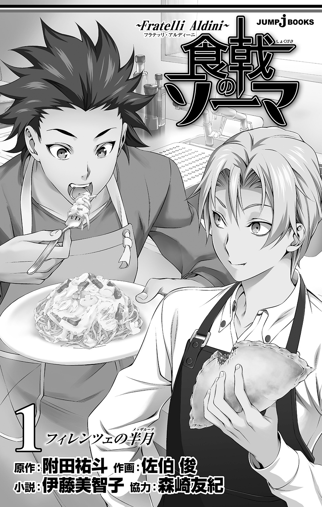

| 食戟のソーマ ～Fratelli Aldini～ 1 フィレンツェの半月 | |
| 附田祐斗 & 佐伯俊 & 伊藤美智子 | |
この本は縦書きでレイアウトされています。
また、ご覧になる機種により、表示の差が認められることがあります。

食戟のソーマ～Fratelli Aldini～フラテッリ・アルディーニ １
Contents
おまけ 美作昴のどっきゅんドキドキ日記
★この作品はフィクションです。実在の人物・団体・事件などには、いっさい関係ありません。
このところ霧が多いな、とイサミは思った。
冬のフィレンツェでは、ときおり、濃い霧が出ることがある。
街を流れるアルノ川の水温が外気より高い時に霧になるのだと、ずっと前に誰かが言っていたのを思い出す。
学校から帰って、店の仕込みを手伝いながら不意に窓の外に目をやると、いつの間にか重い霧が立ちこめていて、外が見えなくなってしまう。ヴェッキオ宮殿がそびえ建つシニョリーア広場や、ヴェッキオ橋、ドゥオーモ（大聖堂）など、古い歴史をもの語る建造物は白いベールに覆われ、石畳の街は幻想的な雰囲気に包まれる。
そんな日は、両親が経営するトラットリア・アルディーニの客がぐっと減る。
客が来なければ、店の仕込みも無駄になってしまう。ホールに立つイタリア人の母は嫌がったが、八歳のイサミはふだんとは違うその様子に、不謹慎ながらも心が躍ってしまうのだ。
何かが起こるような予感。日常から、非日常へ誘う、そんな空気。
もちろん、何かあっては困るが、家の中から外を見つめるだけなら不都合はない。あっては困る具体的な「何か」を想像するには、そのころのイサミはまだ幼なかった。
一方のタクミも、霧の日を楽しみにしているようだった。だが、その理由が自分とは少し違っていることに、イサミは最近気づいた。
「それじゃあ、そろそろ始めようか」
穏やかな父の声にしたがい、イサミとタクミは厨房に入る。霧のせいで、店を開けていても客が来ないので、このごろは二人に新しいリセッタ（レシピ）を教えてくれるのだ。タクミはイサミ以上に、その時間を楽しみにしているらしい。
日本人である父は、若いころにクォーコ（料理人）を目指しイタリアに渡ってきた。さまざまな店で修業し、母に出会ったことでこの地に骨を埋める覚悟を決めたのだと、前に母が話してくれたことがある。二人でトラットリアをオープンし、苦労しながらも楽しく、地元の人に愛される店を作り上げていったのだ、と。
タクミとイサミが厨房に立つようになったのは五歳のころだ。それは父や母に言われたからではなく、そうすることが二人にとっては自然だった。学校に行ったり、勉強したり、ゲームをしたりするのと同じように、料理を始めた。そのことについて父は、止めることもなければ、強制することもなかった（一方、母は大喜びだった）。
慣れない仕事も二人にとっては楽しかった。
店で働き始めては地味な作業に嫌気がさし辞めていく見習いたちとは違い、トマトを細かく刻んだり、バジルでジェノベーゼソースを作ったり、ラビオリの中にフィリングを詰めたりする作業も、タクミとイサミにとっては遊んでいるような感覚に近かった。できあがる料理に感嘆し、食べてくれる人々の笑顔を見て、父と母の仕事を誇りに思った。
父はあまり多くを語らなかったが、その背中がさまざまなことを教えてくれる。厨房の中で踊るように動くその姿は、何よりも雄弁だった。特に、メッザルーナという半月型のナイフを持った時の父はかっこよかった。速いスピードで野菜を刻み、たたき切るように肉をさばく。双子の兄弟はその姿に釘付けになり、父の姿が、ヒーローのように見えた。
その父が、リセッタを教えてくれることになった。
八歳になり、簡単な料理なら難なく作れるようになった二人の、次のステップ。
霧の日限定なので、これまでに教えてもらったリセッタの数はまだまだ少ない。しかし、新しい料理を覚えられること、ふだん父の手つきを盗み見ながら「この料理はどんな風に作るのだろう」と思っていた疑問に対し、細かい手順を知ることができるのは、二人にとってとても大きなことだった。
どんな料理でも、どんなことでも吸収する。
ふだんから、イサミは注意深く父の仕事を見つめている。おそらく、タクミも同じ気持ちのはずだ。
父は銀色に光る調理台をおもむろに拭くと、笑顔を見せる。それが、いつもリセッタを教える時の合図だった。
「それじゃあ、今日はポルポ・アフォガートを教えよう。二人共、この料理は日本語で言うと、なんだかわかるかい？」
「兄ちゃん」と、イサミはニッと笑ってタクミを見つめる。するとタクミもニッコリと笑顔を見せる。幼い二人は「せーの」と、かけ声をかける。
「タコのワイン煮こみ！」
声を揃えて元気に笑いかける。料理を通して、日本語も一緒に覚えていく。
『タコのワイン煮こみ』は、数あるメニューの中でも客に人気があった。パスタなどを食べる前に、お酒を飲みながら軽くつまめる料理として注文されることが多い。
「じゃ、これから作るから手順を見ているように。わからないことがあったら、あとから質問しなさい」
そう言うと父は、麵棒でタコを叩き始める。
ごん、ごん、ごん。リズムよい音が厨房に響き渡る。イサミはそっと、タクミに耳打ちする。
「ああすると、やわらかくなるのかな？」
「多分、筋が切れるんだと思う。......あのぐらい叩かないとダメなのか」
二人は相談しながら、父の作業を見つめる。
タコを充分やわらかくしたあと鍋に入れ、まるごとのトマト、イタリアンパセリ、こしょう、ニンニク、とうがらしと、白ワイン、ほんのちょっとだけオリーブオイルと砂糖を加えてふたをすると、父はガスの火を点ける。
「はじめは強火で煮て、噴いてきたら弱火にして四十分煮るんだ。Mi sono spiegato?（わかった？）」
「Ho capito!（わかった！）」
双子の兄弟がニッと笑顔を見せると、父は安心したように頷いて「火の番を頼んだよ」と、そのまま母のいるホールへ出ていった。
「なんだ、思ったよりカンタンなんだねー」
ふつふつと煮え始める鍋を見ながら、イサミはのんきな声で口にする。だが、その言葉にタクミの方は「いや」と慎重に言う。
「単純な料理の方がむずかしいって言うからな」
「そうかなぁ」とイサミは首をかしげる。イサミからしてみると、肉や野菜を煮こみ、出汁を取るブロード（スープ）の方が難しく感じる。ずっと火の番をしながら、アクを取り続ける作業の方が、気を遣うし面倒だ。ブロードの作り方は、また別の霧の日に教えてもらうことになるのだろう。
タコのワイン煮こみができあがり、父、母、タクミ、イサミの四人で試食する。母も「こんなに霧が濃くっちゃね」と、店内で一緒に食事をすることに同意した。
父は料理を皿に取り分け、タクミとイサミの前に差し出す。二人はすぐにひと口食べると顔を見合わせる。
「ん～っ、おいしいっ！」
声まで揃った二人の顔がほころぶ。
口の中に、トマトとニンニク、イタリアンパセリの香りが重なり、さわやかに鼻から抜けていく。ほのかに感じるトマトの甘み。ぷりっとしたタコを嚙むと、ぎゅっとスープが飛び出してくる。適度に弾力があるのにやわらかいその食感は、もうひと口、またもうひと口と、自然と皿に手を伸ばしたくなる威力を持っている。アルコールの飛んだ白ワインの酸味が、全体をきゅっと引き締めている。
どうして、こんなにおいしく料理を作ることができるのだろう。
イサミは尊敬のまなざしで父を見つめる。
言葉で語らない分、味で語る。
それが日本人の性格なのか、父の気質なのかはわからないが、イサミにとって父は、サムライとニンジャの国のヒーローだ。
「この味をよく覚えておくんだぞ」
いつものように穏やかな口調で、父は二人に言った。
「はー、今日もうまかったな！ タコのワイン煮こみ！ ボク、大好きなんだよねー」
店の二階にある部屋に戻ると、思わずほくほくとした顔になりイサミは言う。机に向かいノートに何か書いていたタクミは、聞いていないようだ。
「おいしかったね、ね、兄ちゃん」
兄に同意してほしくて、イサミはもう一度呼びかける。すると、タクミは振り向きもせず「ああ」と相づちを打つ。その態度に疑問を覚えタクミのそばへ寄る。机の上には転がった色鉛筆。そして、ノートに描かれた『タコのワイン煮こみ』の絵がイサミの目に飛びこんできた。
タクミが独自に描いたリセッタだった。
習った料理の手順を細かく絵にし、盛りつけ方やちょっとした工夫まで記されている。色鉛筆を重ね塗りすることで新しい色を生み出し、細かい食材も鮮やかに描かれている。画力があるとは言いがたいのかもしれない。しかし、わかりやすく丁寧で、ひと目見ただけで料理の本質を突くような、そんな描き方だった。
それはイサミにとって、軽い衝撃だった。
同じことを教えてもらっても、イサミはメモを取る程度で、基本的には頭の中で覚えておく方が大切だと思っていたのだ。当然兄もそうだろうと思っていた。
「すごいねー、兄ちゃん」
後れをとった、という思いから発せられた声がうわずっている。それを悟られたくなくて、イサミは慌てて言葉を重ねる。
「そんなのいつから描いてたの？ ホント、すごいなー！」
半分は素直にそう思った。しかしもう半分は、心の中でたぎるような何かをごまかすためだ。
「去年ぐらいからちょっとずつね。父さんに教えてもらった時に、ひまを見つけて描いていたんだ」
「さすが兄ちゃん。次に作る時に、リセッタがあったらわかりやすいもんねー」
「ああ。でも、作る時はこのノートは見ないんだ」
「えっ？ どうして？」
「このノートはあくまでも頭に入れるために書いてるんだ。作る時には、見なくてもほとんど覚えてるから......」
はにかむような笑顔で弟に言うタクミに、胸の奥が一瞬、カッと熱くなるのを感じる。
イサミが料理を覚える時には、やはりメモを頼りにしている。そのためには、何度も何度もメモを見返して、暗記するように覚えている。それはどちらかというと、学校で習う算数や、イタリア語の単語の綴りを覚えていくのによく似ていた。
ずっと仲良く並んでいたと思っていたのに。
いやむしろ、ボクの方が兄ちゃんより先をいっていたと思っていたのに。
ずるい。兄ちゃんはずるい。
子どもらしい無邪気さで、イサミは反射的にそう思った。
実際、イサミは器用で要領もいい。
学校の成績もタクミよりよかった。家で遊んでいたポーカーも、当時、日本で作られ全世界に売り出されたポータブルゲームも、いつもイサミが勝っていた。タクミより運動神経もよかった。
日常生活においては、イサミはタクミに劣るところはなく、むしろ、勝ってさえもいた（このころのイサミはまだ瘦せていて、夏には瘦せ、冬には肥える体質が現れるのは少しあとになってからだ）。
それなのに。ひとつだけ、兄ちゃんに勝つことができないものがあるかもしれない。
しかもそれは、ボクがもっとも「なりたい」と思っているものだ――。
認めたくない予感が濃い霧のように、イサミの心を静かに覆い始めていた。
「いつからあんなリセッタ描いてたんだろう......全然気づかなかった」
教室の片隅にあるオイルヒーターの前で、猫のように背を丸めて暖をとるイサミは、誰に言うともなくつぶやく。すると先生に頼まれたのだろうか、壁に絵を貼っていたビアンカが、元気のないイサミに気づき話しかけてくる。
「リセッタがどうかしたの？」
同じクラスのビアンカはタクミとイサミの幼なじみで、たゆたう黒髪が印象的な、活発な少女だ。それでいて時に、ものごとを深く見つめるような黒い瞳は、利発そうな眉毛とあいまって凛とした表情を見せる。イサミはときどき、一を言うと十返ってくるようなその様子に、気圧されることがある。
「えっ、いや、別に」
つい気弱に答えてしまう。それがビアンカの好奇心に火をつけることがわかっていても、身についた関係性と習慣はなかなか抜けない。
「ちょっと、どうしたの？ まさか料理のことでタクミとケンカしたんじゃないでしょうね？」
目を三角にしてビアンカがこちらを見る。
「あなたたち兄弟が仲が悪いなんて、絶対イヤなんだから」
「そんなこと言われたって。ボクたちだって、ケンカすることもあるよ」
「うそ。今まで一度もしたことなかったじゃない」
指摘されてイサミははっとする。確かにこれまで二人はケンカしたことがない。もともと温厚でのんびりした性格のイサミは、タクミが嚙みついてきてもいつも笑って取り合わなかった。それに今回のことは、ケンカというよりただ単に、もやもやした、言葉で説明しづらい気持ちを持っているというだけだ。
イサミ自身、タクミを避ける態度を取ってしまうのは初めてのことで、正直、戸惑っている。
「まあ......別にケンカじゃないし。......兄ちゃん、どんな感じだった？」
探るように言うと、ビアンカが呆れた顔をする。
「どんな感じって、一緒に学校来たんでしょ？」
「今日は先に出てきちゃったんだ。学校ではまだ話してなくて」
タクミだけ二人とは別のクラスにいる。ビアンカは目を丸くして言う。
「ホントに珍しいわね。イサミがタクミのこと避けるなんて、絶対になかったのに！」
ビアンカの声の大きさに、少し責めるような目を向けると、察したように静かに話し始めた。
「......さっき廊下で会ったけど、いつも通りだったよ。そういえば、おじさんからリセッタを教えてもらったとかなんとか......あ、もしかしてそのこと？」
勘のいいビアンカに核心を突かれ、イサミはどきっとする。結局、うまくごまかすことができずに、昨日感じたことをビアンカに話さざるを得なくなった。
タクミが見せてくれたリセッタ。今まで自分が先を歩いていたと思っていたのに、料理は先を歩かれているような気がするという焦り。
ときおり頷きながら、興味深そうにイサミの話を聞いていたビアンカが、すべて話が終わると小さくため息をつき、「それは仕方ないわよね」とつぶやく。
「だってタクミの料理は、ちょっと特別だもん」
「特別って？」
「タクミって、ひとつのことに集中すると、他が見えなくなるでしょ？」
「それは......そうかも」
ビアンカに言われイサミも思い当たった。
まだずっと幼いころ、両親と四人で祖父母のいるソレントへ行ったことがあった。船着き場を歩いている時、祖父がイサミの手を引いて波打ち際で遊ばせてくれた。
「兄ちゃんもおいでよ」
と、イサミが言うと、タクミは一目散にこちらに走ってきた。しかし、船を停めるため、構造上、波打ち際の先はすぐに深くなっている船着き場は、タクミが波に足を踏みこんだとたん、ずぼっと海に身体ごと沈んでしまった。慌てた両親と祖父母が、水面から伸ばされた手を引き上げると、ずぶ濡れになったタクミが「あー、びっくりした」と現れる。溺れたことに、たいして恐怖も感じていないようだった。
イサミが「どうして走ってきたの？」と尋ねると、
「だって、早く波に入ってみたかったし」
タクミは何でもないことのように、笑って言った。
おそらくタクミにとっては、料理もそういう対象なのだろう。
特に考えることもなく、つい集中してしまう。つい周りが見えなくなってしまう。その結果、他のことはなおざりになってしまうのだ。
一方のイサミは、そういうわけにはいかない。自分までひとつのことに集中してしまったら、誰がこの天然で妄想力の高い兄のフォローをするのか。別に頼まれたわけでもないが、タクミについていくことが、イサミはある種の使命だと思っている。
そうやって、この兄弟の関係性は成り立っていたのに、それが料理に関しては違っている。ビアンカの指摘は鋭かった。
それから数日間、イサミは積極的にタクミと話そうとはしなかった。
タクミが話しかけてくれば無視はしないが、自分から話しかけようとすると、何を話していいかわからなくなってしまうのだ。自分の中のもやもやした感情をなんと呼べばいいのか、それさえもわからないままに、イサミはタクミとうまく話せないという長い一日をやり過ごした。
そのかわりに、学校の図書館で、今まで父から習ったリセッタを懸命に思い出し、ノートに描いた。兄のあとを追いかけることが、今の自分にできる精一杯のことだった。
そして、次の霧の晩がやってきた。
その日教えてもらったのは、リセッタではなく、コース料理の組み立て方だった。一般的にイタリア料理のフルコースはアンティパスト（前菜）、プリモ・ピアット（パスタ類）、セコンド・ピアット（肉料理か魚料理）、コントルノ（サラダ）、チーズ、ドルチェ、コーヒーの順番だが、トラットリア・アルディーニでは、アンティパストのあとは、二皿目に肉か魚、パスタのいずれかを選ぶ形式で、最後はドルチェ、という簡単なコースが用意されている。リストランテほどは気取っていないが、街の人々の特別な日、たとえば誕生日や結婚記念日の時に、よく注文されていた。
「本日のおまかせコース」は、母により「アルディーニの気まぐれ」という名前がつけられていて、そのときどきに入った食材で料理を提供することになっている。
「前菜には彩りを加えよう。赤と黄色のパプリカ、オリーブを入れたフリッタータ（イタリア風オムレツ）。それから、メインはコトレッタ・アッラ・ミラネーゼ（仔牛のリブロースのカツレツ）、ヴェネツィア風イカの墨煮、サルシッチャ（ソーセージ）とルッコラのパスタ。ドルチェはレモンのセミフレッドだ。よく見ているんだよ」
実際に作っていく父の料理を、イサミは食い入るように見つめる。盗み見るように隣を向くと、タクミも同じように真剣に父の手つきを見つめている。
それから父にうながされ、二人は同時に前菜を作った。
父のフリッタータをできるだけ忠実に再現したイサミに対し、タクミは少しだけアレンジした。フリッタータの脇に、つけあわせでイタリアンパセリとトマトの簡単なサラダを添えたのだ。
「どうしてこれを？」
店のテーブルで母も交えて試食している時、父がタクミに聞いた。イサミは、リセッタを変えたことを父がどう思っているのかと注意深く見つめている。
「その方がきれいだし......おいしくなる気がしたから」
怯むことなくタクミは答える。
「そうか。......確かに、彩りがきれいになったな」
「ホント？」
「母さんもこっちの方が好きよ」
「よかった」
両親に褒められ、タクミは満足そうな笑顔で自身のフリッタータを口にしている。
イサミもひと口、食べてみる。
トマトのサラダが加わることで、またフリッタータの味が変わる――おいしかった。
こんなことなら、ボクだってひと手間加えて、アレンジしたのに。
どうしようもなくやり場のない想いがイサミの胸に浸透していく。
兄ちゃんはすごい。
ボクが思いつかないことを、いつもやってのける。
でも――ボクだって。
それは、イサミの中で初めて生まれた、兄に対しての尊敬や愛情以外の強い感情だった。
それからさらに二日ほど経ったある日、厨房の隅でトマトソースの下ごしらえをする二人の元へ、父がやってくる。
「タクミ、こっちの盛りつけを手伝ってくれ」
「えっ......」
タクミは驚いた表情で父を見つめている。
「できるだろう？」
「うん、もちろん！」
その瞬間、タクミは太陽のような笑顔を父に向けた。それは他人から認められたものが見せる真の笑顔だ。イサミの心に小さなとげが突き刺さる。
「父さん、それならボクも！」
「いや、イサミはトマトソースを完成させてくれ。頼んだよ」
イサミの主張は受け入れられない。他方、父にうながされ、タクミは厨房の中央に立つ。まるでそれは、選ばれた者だけが立てる舞台の中央のように輝いて見える。
どうして兄ちゃんだけなんだ？
濃い霧がイサミの心を覆っていく。
今日の仕事が終わり、部屋のベッドに横たわって何度も何度も考えていると、シャワーから戻ったタクミが入ってきた。
「イサミ、おまたせ」
「............」
返事をしたくなかった。
「おい、イサミ？ 寝てるのか？」
顔を覗きこむようにして、タクミがこちらを見る。イサミは思わず、手で軽く払いのけようとすると、タクミの鼻面にイサミの手が当たった。
「いってっ！」
「あっ......」
ふだんならすぐ「ごめん」という言葉が出るはずなのに。黙って鼻を押さえているタクミを見る。むっとした表情でこちらを見返している。
「今まで黙ってたけど......この間からなんなんだ？ オレのこと、ずっと避けてるだろう？」
少しむくれたような表情でタクミがこちらを見ている。
「......別に避けてなんかいないよ」
「いや避けてる！ 絶対避けてる！ オレ、何かしたか、イサミ？」
少し不安そうな表情でこちらを見るタクミに、イサミは一瞬だけ、申し訳ない気持ちになる。タクミが悪いわけではない。しかしこの複雑な気持ちを、自分でもどう解消すればいいのかわからない。
「だから、別に何もしてないよ」
「じゃあなんだよ？」
「............」
尋ねられてさらに言葉に詰まる。「兄ちゃんの方が父さんに頼りにされていてうらやましい」なんて、かっこわるくて口が裂けても言えない。
黙っていると、タクミが何かに思い至ったような顔になった。
「もしかして厨房でのこと？」
言い当てられ、心臓が跳ねる。タクミには知られたくない気持ち。しかし、もしその対象がタクミ本人でなかったら、本当は相談したかった気持ち。
「......父さんは、兄ちゃんにだけ盛りつけを頼んだ」
いざ口にすると、なんだか怒りがわいてきて、ぶすっと頰が膨らんでしまう。
「それは......オレの方が盛りつけが得意だったからだろ。この間のフリッタータが、父さんの頭にはあったんだよ」
「............」
「イサミは、オレとは違ったいいところがあるんだろうし......」
「ボクのいいところってなんだよ？」
今度は責めるようにタクミを見る。こんなの、完全に八つ当たりだ。
かっこわるいかっこわるいかっこわるい。
わかってる。でも止まらない。
「それは......オレだってわからないよ。お前が見つけるしかないだろ？」
「兄ちゃんはボクの兄ちゃんだろ？ なんでわかんないんだよっ！」
「知るかそんなの！ 自分で考えろよ！」
「なんだよ！ 兄ちゃんに何かあると、いつもボクが面倒見てるじゃん！ だったらボクの言うこともたまには聞いてくれたっていいじゃないか！」
「別にオレは頼んでない！ イサミが勝手にオレの先回りしてるだけだろ？ オレに八つ当たりするんじゃない！」
「八つ当たりなんかしてない！」
自分でもびっくりするほど大きな声が出る。謝りの言葉が喉の奥につかえて、なかなか出てこない。
「......勝手にすればいい」
深いため息と共に、タクミは部屋を出ていく。引き止めれば、謝れば今ならまだ間に合うのに。
ドアの閉まる乾いた音が、静かに響いた。
「あなたたち、本格的にケンカしちゃったのね」
ビアンカが呆れたようにイサミを見た。
シニョリーア広場で二人は段差に並んで腰かけている。屋台で買った焼き栗は、香ばしい甘い匂いを漂わせている。イサミは黙々と、ビアンカと自分用に交互に栗をむく。
「......だから、別にケンカじゃないよ」
「だって、タクミもイサミを避けてるじゃない！ これがケンカじゃなくて何なのよ？」
「............」
イサミは答えたくなくて二つ、栗を口の中に放りこむ。口の中がもそもそと重くなり、飲みこむのに苦労する。
「で、どっちが悪いの？」
「............」
「タクミのせい？」
「............」
「イサミの方が悪ければ、自分からタクミに謝るものね。そんなにひどいことされたの？」
大きな黒目がイサミの目をとらえる。
「......別に、兄ちゃんは悪くない」
ふいっと、その視線から顔をそらす。ビアンカは意を得たとばかりの表情になる。
「厨房で何かあったの？」
「何もない」
「何かあったから仲が悪くなってるんでしょ？」
「............」
「タクミと仲直りできるように、私が何か言ってあげましょうか？」
「あーもう、いいよ！ ビアンカのおせっかいっ！」
あまりにいろいろなことを聞かれたため、うっとうしくなり、強い口調で言い放ってしまう。ビアンカの顔はみるみる怒りの表情に変わっていく。
「なによ！ 心配してあげてるのに。それならもう、一生ケンカしてればいいのよ。私は知らないから！」
イサミから焼き栗の袋を取り上げると、そのままシニョリーア広場を横切り、家の方へと帰っていってしまった。寒空の下、残されたイサミがため息をつくと、白い息がふわっと現れて消えていく。とたんに、特別の日だったはずの霧の日がやってくるのが憂鬱に思えてくる。
また父さんが兄ちゃんに新しい仕事を頼む姿を見るのは、とても苦しい。
次の霧の晩は、どうすればいいのだろう？ ただ見ていることしかできないのだろうか？
それなのにどうしてボクは、厨房に立つんだろう？
そうは言っても実際、厨房に立つのは、やっぱり楽しかった。
魚の鱗を取ったり、トマトソースを煮こんだり、トリッパの下ごしらえをしたりするのも、できあがりを想像すると心が浮き立つ。手順も、もっと工夫できることはないか、もっと早くできる方法はないかと考えるのも、ゲームみたいで楽しい。
タクミにとって料理は遊んでいる感覚に近いのだろうが、それはイサミにとっても同じことだった。
しかし、イサミにとって――おそらくタクミにとっても――楽しいから厨房に立つ、という段階は、終わろうとしていた。
二人がケンカをしてから五日が経ったある日、また霧の日がやってきた。
イサミが厨房に行くと、タクミはもうコックコートを着て用意を済ませている。一瞬だけこちらを見たが、すぐに顔をそむける。気まずさを感じながらイサミもすぐに着替える。
何か話しかけるきっかけがあれば、仲直りできるかもしれない。
頭の中で、小さな糸口を探そうとする。しかし、これまでケンカをしたことがなかったため、どうやったら修復できるのか見当もつかない。それに、このもやもやした気持ちが消えなければ、このままなのではないか。ケンカの原因は自分にあり、ただ「謝る」だけでは何も解決しないとイサミもわかっていた。
靴音をさせて父が入ってくる。今日は少し、ピリッとした空気が感じられる。父はおもむろに二人を見ると、静かに口を開いた。
「タクミ、イサミ。二人に提案があるんだ」
いつもの穏やかな口調で父は言う。しかし、これまでの「楽しく料理を学ぶ」という雰囲気とは違い、その表情は真剣に見える。
「二人とも、五歳のころから厨房に立っている。もう三年だね？」
その問いに、二人は静かに頷く。
「今まで、いろいろ手伝ってもらったけれど、そろそろ見習いの仕事は終わってもいいと思っている。君たちは、この先に進むべきだと思う」
この先に――。
イサミの心がどくん、と波打つ。先に進めるのはタクミだけなのだろうかと、ついネガティブに考えてしまう。
「そこで、ひとつテストをしたいんだが、いいかい？」
「テスト？」
イサミより一瞬先に、タクミが尋ねる。
「二人に料理を作ってほしい。コースになるような前菜とメイン――メインは、肉、魚、パスタの中から選んで作るように」
「ドルチェは？」
「ああ、今回は考えなくていいよ。ドルチェはまだきちんと教えていないし、次の機会にまたテストするから。テストは一週間後だ」
「わかった」
父の言葉にタクミが頷くその横で、イサミは父の言葉をメモに走り書きする。緊張で文字が震える。
「どんなメニューでもかまわないけれど、アルディーニのお客さまに出せるようなものを考えてほしい。自由にイメージを膨らませること、お客さまに喜んでもらえること、そして......」
そこで父はひと呼吸置き、二人を交互に見つめる。
「そして一番大切なことは、自分らしさを出すことだ。いいね」
言い終えると、父は穏やかに微笑んだ。
自分らしさ。
父の言葉は突然、イサミの前に立ちはだかる。部屋のベッドに寝転んで考えるが、それがどういうものなのか、見つめようとするが心に霧がかかったようでわからない。
「どう思う、兄ちゃん？」
尋ねたくても、タクミはそこにいない。ケンカして以来、客間を自分の部屋にして、この部屋には着替えを取りに来るぐらいだ。
近くにいるのに遠い。
思えば、タクミとはずっとずっと近かった。
もちろん記憶はないが、母のお腹の中からずっとずっと、二人は一緒にいた。生まれてからも、離れることはほとんどなかった。赤ちゃんのころや、幼稚園のころの写真を見ても、常に一緒にいてお揃いの服を着ていた。見た目こそ違っていたものの、見てきたものや聞いたこと、今まで感じたことはほとんど同じだったはずだ。
同じ月を見て「きれいだ」と感じ、同じゲームをして「楽しい」と感じ、同じものを食べて「おいしい」と感じてきた。
しかしこれからは、もう「同じ」ではいられない。なぜなら、イサミはタクミではないのだから。
それを証明するには、自分自身で、料理でどうにかするしかない。
自分らしさとはどういうものなのか、全然わからないけれど、父の言うように、イサミ・アルディーニらしさを二人に見せなくてはならないのだ。
考えたとたん、プレッシャーで心が重くなってくる。もしここで、それができなければ、もう厨房に立たせてもらえないかもしれない。そんなの嫌だ。
ベッドから跳ね起きて机に向かうと、これまで書いたメモやリセッタを食い入るように見つめる。どんな料理を考えればいいのか、ヒントはここにあるはずだ。
自分らしく、自由に。
「イサミらしさ？」
次の日、さっそくビアンカに「イサミ・アルディーニ」とはどういう人間か尋ねると、思いっきり怪訝な顔をされる。
「突然なに言ってるの？ タクミとケンカしすぎておかしくなっちゃった？」
「ひどい言い方だなー」
「だって、イサミがそんな哲学みたいなこと聞くなんて」
「料理の参考にしたいんだー。自分らしいメニューを作らなきゃいけなくてさ。兄ちゃんには絶対負けたくないんだ」
自分の言葉に、力が帯びてくるのがわかる。
「料理でボクらしさを証明して、父さんや母さんや兄ちゃんを......見返してやらなきゃ！」
ビアンカは一瞬、目を大きく見開いたあと、「ああ、そういうことね」と、納得したようだった。
「そうね......だったら今のイサミは、らしくないわね」
「えっ？」
「イサミのいいところは、おっとりしていて、滅多なことじゃ動じないところでしょ。だから、なんでもできるんだと思ってたけど」
「そんなの......ただ器用なだけじゃないか」
「そうかしら。器用なことっていけないこと？ 私なんて、全然器用じゃないからうらやましいわよ。イサミみたいにいろいろできれば、もっと世界が広がるかもしれないのに」
「............」
「もっとどっしり構えたら？ いつものイサミらしく」
そう言うとビアンカはオリーブの花のような笑顔を見せる。イサミも釣られて微笑む。
「......ところで、兄ちゃんは何か言ってた？」
こっそり、タクミの料理を偵察しようとしたが、ビアンカに「知らないわ。自分で聞けば？」とつれなくされてしまった。
「そういうところが、どーんと構えてないのよ。わかる？ 人のことは気にしない！」
ビアンカに注意され、さすがにイサミは反省した。
しかし、考えれば考えるほど、どうすればいいのかわからなくなる。その悩みが顔に出ていたのだろう、リビングで学校の宿題をしながら、ついぼんやり考えこむイサミを見かねたのか、父が話しかけてくる。
「算数でわからないところがあるのか、イサミ？」
「ううん、そうじゃないんだー。この間、父さんが言っていた『自分らしさ』のことをつい考えちゃってさ。一体どうすればいいのかわかんないよー」
頰杖をついて甘えるように答える。父は「なるほど」と穏やかにイサミを見る。
「それなら、少し視点を変えてみたらどうだい？」
「視点？」
「そうだな、たとえば、ふだんと少し違うことをしてみるとか」
「違うこと......？」
首をかしげると、父は激励するようにタクミの肩を優しく叩き、去っていった。
ふだんと少し違うこと。
いろいろ考えた末、翌日から、店がオープンすると厨房には入らず、店の中でホールを切り盛りする母を手伝うことにした。
「私は助かるけど......コースのメニュー、考えなくていいの、イサミ？」
前菜を運ぼうとするイサミに、母が心配そうに尋ねるが、「大丈夫」とひとこと言うと、客の前へ料理を運んでいく。店の一角でテーブルを囲む、よく来る近所の男性常連客に、酒の混じった陽気な声で呼び止められた。
「おっ、イサミ、偉いな。店の手伝いか」
「うんっ。今まで厨房が中心だったけど、ちょっとずつホールも手伝おうと思って」
「へぇ、感心だな」
「まあ、料理の才能はタクミの方がありそうだって話だからなぁ」
悪気のない常連客の言葉に、イサミの心がチクッと痛む。だが、今はそんなことを気にしている余裕はない。
とにかく、自分らしく、メニューを作る糸口を探さなくては。
日々、常連客の話を聞いていると、「トラットリア・アルディーニ」のいろいろな部分が見えてくる。他の店に比べ、雰囲気が気さくであること。父や母が、地域に根ざすことをとても大切に考えていること。人々はここに集うことで、ひととき、日々の憂さを晴らし、より、人との絆を深めていること。
まさに大衆食堂、トラットリアの名にふさわしい、すばらしい店なのだということを。
この事実を糸口に考えていけば、自分らしい何かが作れるかもしれない。
そして、一週間後――また、霧の夜がやってきた。
純白のコックコートに身を包み、イサミとタクミは並んでいた。
「できあがったら、父さんと母さんに知らせてくれ。いいね」
父の言葉に、二人は真剣な表情で頷く。それからすぐに、互いに背を向けるように、それぞれ調理に取りかかる。
自分らしく、自分らしく。
呪文のように心の中で唱えながら、イサミは下ごしらえを進めていく。だが、やっぱりタクミが何を作るのか気になって、ときおり、つい振り返ってしまう。
そんな様子を気にすることもなく、調理に没頭しているタクミを見ると、イサミの中で尊敬の念と嫉妬の念が入り交じる。
流れるような、軽やかな手つきで野菜をちぎり、盛りつけし、ソースをかける。たったそれだけの簡単な作業でも、タクミが行うと協奏曲が生まれる。素材を活かし、まとめあげ、ひとつの音楽に昇華する。生まれながらの才能。
どうして料理の神様は、双子の兄弟の片方にだけ微笑んだのだろうか？
イサミは作業をしながら、理不尽な思いに気持ちを引っ張られそうになる。しかし、そんなこと考えている場合じゃないと、すぐに打ち消す。
兄ちゃんにすごい才能があることなんて、本当はずっと前からわかっていた。
ただ、見ないようにしてきただけだ――。
今は自分ができる精一杯のことを考えよう。
タクミと同じ土俵で勝負をするのではなく、自分の料理を、自分の力を出そう。
イサミは、全神経を集中する。
これまで厨房で学んできたこと。
トラットリア・アルディーニで常連客が教えてくれたこと。
その想いをこめて。
テーブルにつく父と母の前に、二人は前菜を運んでいく。
タクミの料理は「パンツァネッラ」。トスカーナ地方の代表的なサラダで、アンディーブやルッコラ、タマネギ、トマトなどの野菜に、パンを加えたものだ。
硬くなったパンをおいしく食べるための節約料理とされているが、タクミが作ると定番料理も新しいものとなる。乾燥したパンをフライパンで炒める時、香り高いエキストラバージン・オリーブオイルを使い、野菜の大きさも、パンを口に入れた時との調和を考えて切られている。ソースは白ワインビネガーをベースにし、オリーブオイル、塩、こしょうでシンプルに味付けされている。
「ん～、これはおいしいわね」
「ああ。トラットリア・アルディーニのサラダとして提供できるレベルだ」
ひと口食べただけで、父も母も顔が緩んでいる。食べなくても、その表情を見るだけで、どれほどおいしいのかが想像ができる。
「ありがとう」
タクミが嬉しそうに微笑んでいる。その表情には、ゆるぎない自信が溢れている。
イサミの心がぐっと痛む。だが、タクミの料理は文句なしにすばらしい。自分は自分なのだから、と、ぐらつきそうな気持ちを支えようとして、無意識に両足を踏ん張ってしまう。
イサミの番が来る。おそるおそる皿を差し出す。タクミと同じ「パンツァネッラ」だ。
「やっぱり、トラットリア・アルディーニの定番サラダはこれだと思ったんだー」
「......それは確かにそうね」
「いただきます」
母と父はそう言うと、静かにサラダを口に運ぶ。だが、その表情にはタクミの時に見せたような感動はない。
「うん......おいしいわね。私はこのサラダも好きよ」
「......そうだな。だが、もう少しオリーブオイルの使い方に気をつけた方がいい。白ワインビネガーとのバランスは難しいからな」
「それはそうね......。私も、イサミはイサミらしい料理を作ればよかったと思うのよ。別にパンツァネッラにこだわらなくたってよかったのに」
フォローをしているつもりの母の言葉が痛い。
タクミがパンツァネッラを作ることを、あらかじめイサミは知っていたわけではなかった。しかし「トラットリア・アルディーニ」らしさを考えれば、このサラダを作るかもしれないことは容易に想像できた。同じ料理を作れば――兄の才能には敵わないだろう、ということも。
タクミに勝つことだけにこだわればそうなる。だが、イサミの出した結論はそうではなかった。次に出るメインのことを考えれば、前菜は「パンツァネッラ」の方がいい。
「次はいよいよメインね」
「おいしかったら、トラットリア・アルディーニのメニューに加えよう」
父と母は楽しそうに話している。息子二人が、自分たちの店のために料理を作ってくれることを、純粋に喜んでいるようだった。
「オレのメインは......牛もつの煮こみ、ランプレドット」
タクミが意気揚々と皿を運んでくる。ギアラ（牛の第四胃）を香味野菜を炒めたソフリットと白ワインで煮たもので、トリッパ（牛の第二胃の煮こみ）と並ぶ、フィレンツェの代表的な大衆料理だ。牛の内臓は匂いが強いため、丁寧な下処理で臭みを消す技術が料理人には求められる。
当然、タクミはそのハードルをクリアし、部屋いっぱいにいい匂いを漂わせながら、ランプレドットの皿を両親の前に差し出す。
「Buon appetito!（召し上がれ！）」
タクミの声と同時に、父と母が待ちきれなかった様子でランプレドットを食べ始める。ひと口食べただけで、二人の表情が幸せそうなものに変わる。
「はぁ～、これはワインが進むね」
「おいしいわ。タクミはいつの間にこんな料理上手になったの？」
話しながらも、ナイフとフォークが止まらないといった感じで、二人はランプレドットを食べ進める。その様子を見ながら、イサミはどうにも食欲が抑えられなくなる。
「ボクにもひと口ちょうだいー！」
「そう言うだろうと思った」
タクミは笑って、イサミの前に皿を差し出す。その馥郁たる香りにたまらなくなって、すぐにランプレドットを口に運ぶ。
とろけるほどやわらかくなった牛の胃袋に、ふわっと感じるニンニクやセロリなどの香りがやわらかく、脇に添えられたサルサ・ヴェルデ（イタリアンパセリのソース）と共に食べると相互が引き立てあい、いっそう香りが高くなる。
おいしい。本当においしい。
あまりのおいしさに、思わず近くにあったパンでソースをすくって食べてしまった。
すごい。やっぱり兄ちゃんはすごい。
ボクは兄ちゃんのことが大好きだ。こんなにすごい料理を作る兄ちゃんのことが。
これからもずっと、兄ちゃんと一緒にいたい。一緒に料理をしていたい。
やっぱり敵わないかもしれない。
でも、ボクだって――。
イサミはパンを飲みこみ、水で流しこむと、そのまま厨房に入っていく。できあがった渾身の品を父と母が待つ食卓に運んでくる。それは――イタリアの代表的料理、ピッツァ・ボスカイオーラ（ツナとキノコのピッツァ）だった。
トラットリア・アルディーニでは、パスタは提供するが、ピッツァは出さない。一般的にピッツァは軽食や夜食として食べられることが多く、ピッツェリア（ピッツァ専門店）で出されることがほとんどで、普通の料理店ではあまり作られないのだ。
「ほう、ピッツァか。どうしてこれを選んだんだい？」
いつもと変わらない穏やかな声で父が尋ねる。店で扱っていないメニューを選んだため、怒られるかもしれないと思っていたイサミは、ほっと胸をなで下ろして答える。
「前に......お客さんたちが言ってたんだ。お酒を飲みながらのおつまみもいいけれど、ちょっと小腹が空いた時に、何か食べられるといいなぁって。その時に、わいわい食べられて、いろんな食材が楽しめるものだと、幸せな気持ちになれるかなーって。だから、前菜は定番のパンツァネッラにして、メインで今までメニューになかったピッツァを食べられたらって思ったんだ」
イサミは、自分の言葉で一生懸命、二人に想いを伝える。「パンツァネッラ」で、父と母が大切にしてきた、地域に根ざすことを。「ピッツァ・ボスカイオーラ」で、新しいトラットリア・アルディーニを提案したかったのだ、と。
「それはすごくいい視点だな」
「お客さんも、私たちには言いにくいのかもしれないけれど......ありがとう、イサミ」
褒められて嬉しくなり、イサミはつい「そんなたいしたことじゃないけどね」と照れたようにつぶやく。
「それじゃ、いただこう。タクミも一枚どうだ？」
「うんっ。イサミも食べるよな？」
タクミはいつもと変わらない口調で、イサミを見つめる。
ボクたちはたしかケンカしてたはずだよな、と思いながら、イサミもテーブルにつく。四人で「Buon appetito!（召し上がれ！）」と言い合いながら、一切れずつピッツァを食べ始める。
おいしかった。自分が思っていた以上に、とてもおいしかった。
「うん、おいしいわね」
「みんなで食べる料理としては最高だ。アルディーニのメニューに加えてもいいな」
父と母が喜んでくれるのはもちろん嬉しかったが、それよりもイサミは――タクミの方が気になる。
「オレには、こんなおいしいピッツァは作れない。......おいしいよ、イサミ」
そう言うと、皿に残っていたもう一切れのピッツァに手を伸ばす。ほっとしたイサミも、同じようにピッツァを口に運んだ。
それぞれの料理を食べ終えると、母がドルチェとしてジェラートとコーヒーを持ってきた。新しくできた街のジェラート店で買ってきたらしい。イサミがピスタチオ、タクミがイチゴのジェラートを食べていると、コーヒーを飲み終えた父が居住まいを正した。
「テストの結果は、二人共合格だ。......いや、合格なのはとっくにわかっていたんだけどね」
穏やかな笑顔で父が言葉を続ける。
「明日から、コースのリセッタはすべて二人に任せる。......もちろん、最終チェックはするけどね」
「えっ！」
タクミもイサミも食べる手を止め、目を見開く。父は頷きながら、二人に微笑みを向ける。
「テストをすることで、お互いがお互いのよさをわかって、協力していければいいと思ったんだ。おまえたちは、たった二人の兄弟なんだしな」
父の言葉が温かく、イサミの心にしみ渡る。
父さんはもしかしたら、ボクたちを仲直りさせるために、このテストを考えたのかもしれない――。
兄のことだけを特別扱いしていたように見えたが、それはイサミの考えすぎで、本当は二人のことをきちんと考えていたのかもしれない。
だが、イサミがこのことに気がつくのは、もっとあとになってからのことである。
父は席を立つと、厨房から何か布にくるまれたものを運んでくる。
「二人に、これを渡そうと思ってね」
それは――厨房で父が片時も放すことがなかった、メッザルーナだった。
「え、いいの？」
「もちろん。二人が厨房に立つんだから、当然だろう？」
まるで王様から刀を賜るかのようなうやうやしさで、タクミは父からメッザルーナを受け取ると、イサミにも片方を持つようにうながす。
メッザルーナは、その名の通り半月のように白く輝き、鏡のように磨かれた刃に二人の顔が映っている。
「大事に使ってくれよ」
「うんっ！」
「もちろんっ！」
二人は大きく頷いた。
部屋に戻ると、早速二人は、明日からのメニューを相談し始める。
「前菜は今まで通りでいいけど、メインは少し変えてみよう。もちろん、イサミのピッツァもメニューに加えて......」
書きためたリセッタを見ながら、ベッドの上であれこれ料理のことを考えるのは、本当に楽しい。隣を見れば、そこにタクミの輝く笑顔がある。
イサミ自身、自分はこんなにタクミと料理がしたかったのかと、驚いている。
振り返ってみれば、前菜は兄の方が優れていたし、メインも「正当派」という意味では兄の足下にも及ばなかった。
普通なら、もっと悔しいはずなのに、そんなことよりも、また二人で料理できることの方が嬉しかった。
負けたくない気持ちはもちろんある。
しかし、今は、ただ、この敗北を気持ちよく感じている。
やっぱり兄ちゃんには敵わない。
今すぐには追いつけないかもしれない。
でも、いつかは兄ちゃんに追いつく。そして追い越す。ボクにだってできるはずだ。
センスは、才能は、兄ちゃんの方が上かもしれない。それでも、ボクはこの道をあきらめることはできない。
ボクは「ボクらしさ」で、前に進んでいくしかない。
「......いろいろごめんな、兄ちゃん」
イサミが素直に謝ると、タクミは「別にいいさ。ケンカしてたわけじゃないし」と、兄らしく優しい表情で笑った。
いつの間にか、霧の晴れた窓の外には、半月が白く輝いていた。
八月×日。
遠月学園が夏休みのせいで、俺はうちに帰らなくてはならなくなった。
子どものころ、料理人である父親の料理を追い越したことが原因で、家から追い出されてしまった。もう家に居場所はない。
しかし好都合だ。
この夏休みを利用して、選抜予選に出場する候補者たちを、徹底的に調べることができる。得意料理や家庭環境、趣味――予選はそのぐらいでいいだろう。
Ｂブロックの薙切アリス、新戸緋沙子、タクミ・アルディーニ、田所恵、北条美代子、イサミ・アルディーニ、吉野悠姫、貞塚ナオ。
そしてＡブロックの黒木場リョウ、丸井善二、伊武崎峻、水戸郁魅、榊涼子、葉山アキラ、幸平創真、そしてこの俺、美作昴――。
本戦に残りそうなヤツの目星はついている。
あとはそいつのことを調べ上げ、いつものようにトレースすりゃいい。
へへっ、簡単だ。
だが、予選では存在を消しておく。俺が、どんな料理人なのか、絶対に悟られないようにするのさ。
本戦に進み、一対一になった時――その時が、相手のプライドを、信念をずたずたにしてやる時だ。
考えただけでもゾクゾクするぜ。
俺のカワイイ子羊ちゃんはどいつかな。へへへ。
郊外に建つマンションの窓の外では、うるさいぐらいの蟬時雨が鳴り響いている。部屋に入ってくる午後の光がじりじりと、ソファで寝そべっているイサミ・アルディーニの身体に照りつける。
「はぁ、暑い......」
夏休みに入る前から少しずつ瘦せてきている身体を起こすと同時に、息を吐くようにつぶやく。この時期は毎年、日本の猛暑を避け、兄のタクミ・アルディーニと共に故郷であるイタリアへ帰ることにしていたのだが、今年は事情が違っていた。
遠月学園で行われる、秋の選抜予選のメンバーが発表されたのである。
同級生の幸平創真や、葉山アキラ、黒木場リョウ、薙切アリス、田所恵、水戸郁魅などと共に、アルディーニ兄弟も予選出場が決まっていた。
「本当に行かないのか、イサミ？」
夏休み前日。マンションの玄関先で、スーツケースを持ち家を出ようとするタクミが、上目遣いでイサミを見る。
「うん。前にも言った通り、もう少しひとりで模索したいんだー。考えがまとまったら、ちゃんと帰るからさ」
「......それはわかってるけど。数日だけでもひとりでこのマンションにいるなんて、淋しいだろうし......」
「え？ 全然。むしろボクがいなくて淋しいのは兄ちゃんでしょ？ ボクが一緒の方が飛行機も乗り間違えないだろうし」
「なっ！ べ、別に淋しくなんかない！ それに、飛行機も乗り間違えたりしないぞ」
「はいはい。心配しなくても、帰りは一緒に帰ってこられるんだから大丈夫だよ」
「............。おまえの意思はわかったよ。じゃ、いってきます」
「いってらっしゃーい。父さんと母さんによろしくね」
タクミが出ていったあと、重いドアが閉まる音が部屋に響く。
生まれて初めて、兄弟が離れて過ごす夏が始まった。
それから気づけば三日が経っている。ダイニングテーブルの上には、イサミが子どものころから作っているリセッタ（レシピ）のノートや、最新の雑誌、古いイタリアンの本などが堆く積まれている。選抜予選のお題である「カレー料理」を考えるべく、いろいろなアイデアを試行錯誤しなくてはいけない段階だったが、頭の中で蟬の声が鳴っていて、何も思いつかなかった。
それにしても――日本の夏って、こんなに暑かったっけ？
もちろん室内にエアコンはある。だが、どういうわけか今年の夏は蒸し暑く、設定温度を下げても額から汗が出てくる。考えてみれば、夏真っ盛りの今ごろはいつもイタリアで過ごすため、日本の夏の洗礼を受けるのは初めてだった。
やっぱり、一緒にイタリアに帰るべきだったかな？
イサミの脳裏に後悔がかすめる。すがすがしいフィレンツェの森。カラッとした空気。祖父母の家へ遊びに行けば、ソレントの青い海とまぶしい太陽が待っている。もちろんイタリアも暑いが、湿気がない分、日本にいるよりはマシだ。
だがそれでは意味がない。
今度こそ、今度こそ兄ちゃんに勝ちたい。
イサミにはそんな切実な思いがある。家の中で、ダラダラしている場合ではない。ソファから立ち上がりダイニングに座ると、再びリセッタを読み始める。
八歳のころ、兄弟は父から厨房を任されると同時に、メッザルーナという包丁を譲り受けた。
「これで自分も一人前として認められた」と、イサミはますます料理に邁進するようになった。もちろんタクミも同じだった。
しかし、二人で厨房に立っても、人々がタクミの方を買っているのは明らかだった。
センスがあるのはタクミの方かな――。
二人で作った料理を食べた常連客や、二人に遠月学園を勧めてくれた叔父は、決まってタクミの料理を褒めた。さすがに両親は面と向かっては言わなかったが、「タクミ、この料理はどう思う？」と大事なことは決まってタクミに尋ねる父や、「タクミ、リセッタをひとつ考えてほしいんだけど」という母の言葉で、容易に察せられることだった。
そのたびに、イサミの心に小さな傷が増えていく。
イサミ自身、兄がすごいことはよくわかっていたが、当時はまだ悔しい思いの方が先に立った。料理が好きだからこそ、比べられるのは嫌だったし、認めてもらいたかった。このまま、兄のお荷物になるのは嫌だった。
ボクだって――。
その思いが、ある日、イサミを突き動かす。
タクミが作った料理に――少し手を加えたのだ。トラットリア・アルディーニの看板料理である「トリッパ」。牛の内臓をトマトで煮こんだものだが、その味付けをより濃いものに、イサミは変えてしまったのだ。
そのことに対し、ふだん穏やかな父が猛烈に怒った。
完成した料理の味を変えることは、お客様の信頼を失うことになる――。
そんな簡単なこともわからず嫉妬にとらわれていたイサミは、自分自身が恥ずかしくなった。ひとりで泣いているところに、タクミがやってきた。
「ごめんよ、兄ちゃん......」
イサミはタクミに謝った。
するとタクミは、怒るどころかこう言った。
「メッザルーナ......半月の名を持つあの包丁、ボクたちにピッタリだと思わないか？」
「............？」
「欠けたものが二つ合わさったとき、完全なるものが生まれる。アルディーニは、ボクたち二人揃ってこそだ！ イサミ！」
その兄の言葉に、どれほど救われたかわからない。
以来、イサミは考えを改める。兄のサポートに徹し、兄が仕事を――料理をしやすいように動くことを第一に考えてきた。それが「トラットリア・アルディーニ」を守ることであり、自分の使命なのだと。
しかし、今回は違う。
兄との戦いの機会が巡ってきたのだ。「二人揃って」ではなく「ひとりで」料理を生み出さなくてはならない。
今度こそ、兄ちゃんに勝ちたい。
なのに、アイデアはひとつも浮かんでこない。焦りとため息が増えるばかりで、ちっとも前へ進めない。
「兄ちゃん、今ごろどうしてるのかな......」
イサミは、今日何度目かわからないため息を、小さくついた。
イタリア・フィレンツェ。トラットリア・アルディーニでは、タクミが帰ってきたというしらせを聞いた常連客が、我も我もと押しかけている。日本でさらに腕を磨いてきた若き料理人の、看板料理はもちろんのこと、新しい料理も食べられるのではないかと期待してのことだ。それに応えるべくタクミは、ひとり、厨房で次々に料理を生み出し、ホールを担当する母と、ローマから休暇で遊びに来ていたビアンカに運ばせる。
「母さん、ストラコット（牛の煮こみ）上がったよ」
「はーい」
「ねぇ、イカ墨のパスタはまだ？」
「あと十秒待ってくれ」
ゆであがったパスタにソースを絡め、皿に盛りつけて差し出す。同時に受け取ったビアンカが皿の回りを白いクロスで拭き、運んでいく。
ふぅ、と思わず息が漏れる。
イサミがいてくれたら、もっと楽に厨房を回せるのに――。
弱音ではなく本音だ。タクミにとってイサミは、厨房でも日常生活でも特別な存在だ。
「ねぇ、まだイサミは帰ってこないの？」
店の営業が終わり、ジェラートを食べながら、ビアンカが口をとがらせている。ビアンカから「イサミのことが好き」と打ち明けられて、もうずいぶん時間が経っていたが、相変わらずビアンカはイサミに想いを打ち明けていないようだった。
「一応、帰るとは言ってたけど......どうだろうな」
「そんなぁ、せっかく帰ってくるタイミングに合わせてフィレンツェに来たのに。イサミに会えないんじゃ意味ないわよ」
「ひどい言われようだな......」
タクミは呆れたように言うが、こういうやりとりが二人の心地よい距離感だった。
「その『選抜』っていうのは、そんなに大変なの？」
最後のひと口を食べ終えると、ビアンカは小首をかしげる。
「そりゃそうさ。遠月学園は料理の腕でヒエラルキーが決まる」
「料理の味なんて主観でしょ？ 審査員の好みだってあるし」
「でも技術には確実に差がある。アイデアや対応力だってそうだ」
「私は学校なんかに行くより、トラットリアを切り盛りする方がよっぽど偉いと思うけどなぁ」
「そうでもないさ」
無邪気に言うビアンカの意見も、わからないではなかったが、今のタクミの考えは少し違っていた。
「学校に行って、いろいろとわかったことも多かったし。それに......ライバルがいるのも刺激になる」
言いながら、幸平創真のことを思い出す。きっと彼も自分と同じように、予選で出すべきカレーメニューについて頭を悩ませているに違いなかった。
「......タクミ、ちょっと変わったわね」
「えっ？」
「だって、日本に行く前は『自分にはライバルなんていない』って言って冷めてたのに。正直、イサミもライバルにならないんだと思って、驚いてたんだけど」
「............」
ビアンカの指摘に、うまく答えられなかった。イサミとの関係は競い合う「ライバル」というより、協力してトラットリア・アルディーニをもり立てていく「仲間」とか「同志」という言葉の方がしっくりくる。
「まあ、あの学校にいる限りは、必死にならないとな」
「そっか......タクミがそんなに真剣なら、イサミも負けられないわね。だから帰ってこないのね」
目の前にあるカプチーノのカップを引き寄せ、ビアンカは静かに飲んだ。
「それでメニューは？ 決まったの？」
「まだ全然」
「えー、ダメじゃん！」
「そんな簡単なもんじゃないんだよ」
「私がかわりに考えてあげましょうか？」
「高くつきそうだし、遠慮しとくよ」
タクミも目の前のカフェラテを飲むと、ひとつ、息をついた。
部屋に戻ったタクミは、子どものころから描いていたリセッタを開くと、ぱらぱらと目を通す。父から教えてもらったものや、兄弟二人で考えたメニューが載っている。日本でも常に持ち歩いているそのノートは、もう十冊以上にのぼっていた。
毎晩、店が終わると、寝る前に読み返しているのだが、なかなかいいアイデアが浮かんでこない。
「カレーじゃなければなぁ......」
つぶやくと、背中から倒れるようにベッドに寝転ぶ。
もともと多種類のスパイスで料理しないイタリアでは、カレー料理はメジャーではなかった。カレーを重視すればイタリアンではなくなり、イタリアンを重視すればカレーではなくなってしまう。
その微妙な境界をどう見極めるのか。
タクミが、そしてイサミが今回のメニュー選びに苦戦する理由はそこにあった。
「......欧風カレー、スープカレー、タイカレー、スマトラカレー、カツカレー、インドカレー、カレーうどん......ふぅ、どれから食べればいいか迷っちゃうなー」
あとからあとから噴き出してくる汗を拭きながら、イサミはじりじりと照り返すアスファルトの上を歩いている。すっかりスリムになったイサミでも、この蒸すような暑さは堪える。背中から汗が噴き出ては、くすぐるように流れ落ちていく。
ここは千代田区・神田神保町。言わずと知れた古本街だ。周辺には本屋と共に古い喫茶店や出版社が軒を連ねるが、実はカレー激戦区でもある。
「おっ、あれはもしかして！」
イサミはガラス張りのビルへと駆けていく。
「やっぱり集英社だ！ あ、ＮＡＲＵＴＯの新しい映画、やるんだねー」
ガラスに貼られたポスターを食い入るように見ながら微笑む。
「ちがうちがう。カレーのこと考えなきゃ」
首を左右に振り、後ろ髪を引かれる思いでビルを後にすると、今度は大通り沿いに並ぶ古本屋の誘惑がイサミを襲う。
「わぁ、古い本がたくさん。料理本もあるよー」
立ち止まり、店先に並んだ本を手に取ると、引きこまれるようにぱらぱらとページを繰っていく。店内を覗くと、本棚に料理の名前の背表紙が並んでいる。中に入ると「世界料理大全」と書かれた、分厚くて古い本が目に留まり、イサミは丁寧に手に取って眺める。
中はすべてカラーぺージで、イタリアンだけでなくフレンチや和食の基本、それぞれの歴史もわかりやすい解説付きで載っている。他の料理の技法も勉強してみたいと思っていたイサミにはうってつけだ。
「この本、いくらするのかなー？ げっ、一万円っ！ 無理無理......！」
値段を確認すると、畏れおののき棚に戻す。だが、またその本をそっと手にとってしまう。
「............」
いや、だが一万円は無理だ。わかってる。でも。
本との出会いは一期一会だという。次に来た時は、もうなくなっているかもしれない。
「すいませーん、これくださいっ！」
本を持ったイサミはひげの店主に一万円を渡す。
大仕事をやり終えた気持ちになり、イサミはすがすがしい気持ちで道を歩いていく。
メールで兄ちゃんを説得して、半分出してもらえば何とかなるっ！ 五千円ずつなら、一週間ご飯を我慢すれば何とかなるし、今は胃袋も小さいからちょうどいい。
――ん、でも待てよ？ ボク、何か忘れてる気がする。
「あっ、カレーっ！」
思い出した瞬間、がくっとうなだれる。
何のためになけなしの貯金を下ろしてきたのか。もしタクミが一緒にいてくれれば、タクミが迷子にならないかどうかが気になって、絶対にこんなミスはしないのに。
イサミは神保町から九段下の方へと歩いていくと、橋を渡り、地下鉄の出入り口近くにある公園の座石に腰を下ろす。すぐ隣には、休憩中のサラリーマンが木陰を陣取っている。前方にはコーヒーチェーンの看板が見える。ゴクッと喉を鳴らし、所持金を確認すると五十円しかない。
はぁ、と大きくため息をつくと、隣のサラリーマンと目が合う。軽く会釈し、顔を合わせないように道路の方へ視線を向ける。
兄ちゃんがいない夏は――。
思わずマイナス思考に陥りそうになり、イサミはぶるぶると首を振る。まだタクミがイタリアに行ってから、一週間しか経っていないのだ。なのに、「淋しい」とか「つまらない」とか「退屈」だなんて言えない。
それより、もう一週間過ぎてしまったことの方が問題だ。選抜のカレーメニューのアイデアはちっとも降りてこない。試作の時間を考えれば、そろそろ固めなければならないというのに。
何も浮かばなくて、夏。
音がするように照りつける太陽の下で、イサミはまたひとつ、大きなため息をついた。
「......なんでこんなことに」
タクミは大きくため息をつく。近くにあった待合ベンチに腰を下ろすと、手元のキャリーバッグにのめるようにもたれる。
あのままイタリアにいても、いいアイデアは浮かばない。
厨房を切り盛りしている間は、他のことは考えられないし、どうしてもそちらにエネルギーを取られてしまう。やはり、日本に戻ってじっくり考えるしかない。
イサミがいつ来るかがわからないこともあり、予定より早くイタリアから戻ってくることにした。そこまではよかった。
だが。
ここは中部国際空港・到着ロビー。愛知県の伊勢湾海上に作られた空港だ。フランクフルトで乗り換え羽田空港に行くつもりが、インターネットでチケットを買った時点ですでに間違えていたらしい。荷物を預ける時に行き先が中部であることが発覚したが、キャンセルするわけにもいかず、そのまま乗って戻ってきたのだ。
イサミがいればこんなことには――。
早速、携帯で電話しようかと思ったが、「ほら、やっぱり兄ちゃん飛行機間違えたー」とからかわれるのも癪だという気持ちになり、思いとどまる。
とにかく、東京に戻らなくては。
飛行機に乗るとまた間違えるかもしれない。それなら、空港から名古屋まで出て新幹線に乗るのが確実だ。タクミは立ち上がると、目の前を通る女性に「あの」と声をかける。
「すみません、名古屋駅まではどうやっていけばいいか、教えていただけませんか？」
笑顔で尋ねると、二十代ぐらいの女性は「も、もちろんですっ！」と満面の笑顔で答えてくれた。
女性の案内で特急電車に乗りこみ、なんとか名古屋駅まで到着する。
「ここが名古屋駅か......」
タクミが名古屋に来るのは初めてだった。東京以外で訪れたことがある大都市は、京都と大阪ぐらいだ。せっかくなので、ついでに名古屋見物することにした。
高くそびえるセンチュリー豊田ビルや、ミッドランドスクエアを横目で見つつ歩いていると、「よろしくお願いしまーす」という元気な声と共に、一枚のチラシを渡される。
紙面にスパゲッティの写真と「名古屋名物・あんかけスパ」の文字が大きく書かれた、新規店を宣伝するものだった。
「あんかけスパ......？」
写真からパスタなのはわかる。だが、こんなの見たことがないし、食べたこともない。
もちろん、そのまま素通りして、東京に帰ることもできる。だが、その未知の食べ物への興味は、むくむくと入道雲のように、タクミの中で大きくなっていく。
改めてチラシに描かれた地図を見る。場所はここからそんなに遠くはない。
タクミはスーツケースをロッカーに預けると、チラシを頼りに店へと向かった。
裏路地に入ってすぐにあるその店先には、開店祝いの花が飾られている。行列はできていないものの、店内は夏休みであることもあってか賑わっていた。
店に入ったタクミはカウンター席に座る。この店の定番らしい「あんかけスパ」を注文すると、店主から、
「カントリー？ ミラネーゼ？ それともミラカン？」と尋ねられる。
「？？？？？？？」
意味がわからず、頭の中でたくさんのクエスチョンマークが浮かぶ。六十代ぐらいの店主が笑顔で、
「あんた観光客でしょう。じゃ、これ読んだってちょ」
渡されたメニューには、英語で説明書きが記されている。
「イタリア人なんだけど......っていうか、日本語わかるし」という文句を飲みこんで、タクミは説明書きにざっと目を通す。
あんかけスパゲッティ――。
一九六〇年ごろから、名古屋名物あんかけうどんに着想を得て生み出されたというスパゲッティ料理で、あらかじめゆでておいた太めの麵を、油やラードで炒め、中華料理の餡のような、ピリっとこしょうをきかせた辛いソースがかけられたものだ。具材としてはウインナー、タマネギ、ピーマン、豚肉のピカタやエビフライなどが載せられている。
一般的に野菜トッピングを「カントリー」、肉やエビフライのトッピングを「ミラネーゼ」（イタリアを意識してつけられたらしいが、真意は不明である）、両方トッピングすることを「ミラネーゼとカントリー」略して「ミラカン」と言うらしい。
おまけに、魚介のトッピングは「バイキング」と呼ばれ、またカレールーをかけて食べることを名古屋では「インディアンスパゲッティ」と呼ぶが、あんとカレーの両方をかけて食べることもある――。
読み終えると、たくみは「ほぅ」と感嘆の息をつく。
「......なんて自由な」
思わず口から言葉が漏れている。
日本は本当に、いろんな国の文化を吸収しながら独自のものにしていくのだな、とタクミは感心せざるを得ない。
翻って自分はどうだろうか？
イタリアンだから、カレーだからと、少し枠にとらわれすぎていたのかもしれない。もっと自由な発想で、審査員に「イタリアンカレー」を楽しんでもらうことが大切なのかもしれないと、そんな風に思えてくる。
「すみませーん」
タクミは大きな声で店主に呼びかける。
「ミラカンひとつくださーいっ！」
「あいよーっ！」
店主からの威勢のいい返事が店内にこだました。
味の濃いあんかけスパを完食し、くちいお腹をさすりながらタクミは名古屋駅に戻ってくる。しかし、ロッカーの荷物はそのままに、別の目的地へ向かうことにした。
「あの、名古屋の名物って、他に何があるんですかね？」
すっかり店主と仲良くなったタクミは、どうせなら、と、カレーのアイデアになりそうなものを尋ねた。
「きしめん、天むす、ひつまぶし。味噌カツ、味噌煮こみも有名だけどね。甘いものなら、ういろうだが。どれもおいしいよ」
「料理もいいんですけど......料理以外の名物って、何かありませんか？ たとえば、調味料とか......」
「調味料？ そんなん、味噌に決まっとる」
「味噌？」
「名古屋の味噌は豆味噌だが。特に岡崎（愛知県三河地方にある地名）の味噌は八丁味噌って名前がついとってな。岡崎では大豆が多く栽培されていて、徳川家康が将軍になってからも、手厚く保護されて名物になったんだに」
「へぇ、そうなんですか......」
イタリアンのことには詳しくても、日本の郷土料理についてほとんど無知なことを、タクミはまた思い知らされる。これからはもっと、国の垣根を越えて、いろいろなことに興味を持つべきだなと反省する。
「その味噌って、どこかで見学できますか？」
「へっ？ 見学？」
「......ボク、料理人なんです。それで、いろいろ材料になるものを探していて......」
「なんだ、そんならそうと、早く言いやぁ。友達が醸造所やっとるから、連絡してあげるよ」
「え、いいんですか！ ありがとうございます！」
タクミがお辞儀すると、店主は「ちょっと待っとりゃーよ」と、エプロンのポケットから携帯を取り出し、厨房へと入っていく。いつの間にか客はタクミだけになっていた。店主ひとりで切り盛りしていたところに申し訳ないと思いつつ、思いがけず味噌の醸造所を紹介してもらえる幸運と店主の優しさに感謝する。何度も店主にお礼を言うと、
「たいしたことないわ。気をつけていってりゃーよ」
と、照れたように笑った。
名古屋駅からローカル電車に乗り、豆味噌の醸造所へとタクミは足を運んだ。
味噌樽を見せてもらい、いろいろなタイプの豆味噌を味見する。
「豆味噌は大豆と塩、水だけを使って作られた味噌なんですよ」
「なるほど......」
小さな匙で味を確認しながら、タクミは「カレー」に応用できないか考えてみる。
頭の中では、なんとなくイメージが固まってきている。
「あんかけスパ」というよりは「ナポリタン」に近い発想で、カレーソースをパスタに絡めてはどうか？ 麵はカレーがよく絡むように、太めのフィットチーネ。問題はカレーソースだが、そのままでは麵にカレーが絡んでいるだけで、おもしろくない。それに、イタリアらしさも表現できない。「カレーと麵」の組み合わせなら、すでにカレーうどんがあり、それにパスタが勝つには難しい――。
もっと決定的に、オレたちらしいもの。
「イタリア」と「日本」を感じられるもの。その境界線を探るのは、並大抵のことではない。
味噌そのものは悪くないと思う。通常の味噌と違い、豆味噌は煮こめば煮こむほど、味が深まる。その特性もカレーには向いている。だが、カレールーと混ぜ合わせた時の重さは避けられない。同時に豆味噌が持つ独特の味を調整するには、また工夫が必要だった。
もう少しソースが麵に絡みやすくなる方法は――。
その時、タクミの鼻をくすぐる大豆の香りが漂ってきた。
「あの......これは！」
タクミは歩いてくる職人に声をかける。持っていた桶の中に、漆黒に輝く醬油が入っている。
「ああ、たまり醬油だよ」
「たまり醬油......あの、味見してもいいですか？」
タクミの申し出に、職人は快く頷く。耳かきほどの小さな匙で醬油をすくうと、注意深く舌先に含む。
「！」
これだ！ これを使えば！
電流のように舌から脳へ味が駆け抜ける。大豆の香ばしさと、とろりとした甘い香り。独特の舌触り。深いこく。隠し味にこれを使って全体をまとめれば、「カレーと麵」の融合をうまくはかれるのではないか。
「つかんだ......！」
この上ない手応えを感じ、タクミはほくそ笑んだ。
一方のイサミは、九段下から高田馬場方面に向かい歩いていた。
夏の高かった日は暮れ始め、途中の神楽坂ではお祭りがあるのだろうか、街灯には提灯が並び、浴衣を着た人々が飯田橋から伸びる坂道をのぼっていく。その日本らしい風流さに、イサミはしばし、心が癒やされる。
そういえば幸平創真が、地元の夏祭りに参加するような話をしていたことを、おぼろげに思い出す。
幸平創真も不思議な男だ。
腕はあるが、知識はそれほどあるとは言えない。しかし、自分の経験や引き出しから、最善の策を常に計算し、発想を転換し、答えを見つけ出そうとする。
それはやはり、大きな才能だ。「知っていること」が必ずしも「料理ができること」につながらないということを、よく表している。
兄ちゃんのライバルだもん。当然だよな。
本当は、ボクが兄ちゃんのライバルになりたかった――。
兄の才能を信じ、兄の背中を追ってきたからこそ、隣に並びたかった。だが、遠月学園のライバルたちを見るにつけ、自分はまだまだ足りない、と謙虚に思うようにもなった。だからこそ、この選抜で結果を残したい。
神楽坂をのぼっていく途中、中華料理店があった。大きな肉まんを売っている。
「はぁ......お腹空いたな......」
匂いを嗅ぎながらやり過ごし、そのまま坂をのぼっていきながら考える。
昔、コースの料理を考えるように、と父から言われた時のことだ。ピッツァを作ったことを褒められ、トラットリア・アルディーニのメニューに加えてもらえた。そのことは今でも、イサミにとって大きな自信になっている。
ならば、自分の得意分野で勝負することが大切なのではないか――。
パスタはタクミの方が得意だが、ピッツァなど生地を使ったものなら自分の方が得意だ。それをカレーに応用すればいい。
たとえば、カレーピッツァ――いや、違う。単にかけただけではインパクトが足りない。
生地にカレーを練りこむ――それはカレーじゃなくてピッツァになってしまう。
それより、さっきの肉まんのように包む――。
「それだっ！」
肉まんではない。カレーパンだ。
パンではなく、ピッツァ生地を使って具を包めばいい。カルツォーネにすればいい！
イサミは走り出すと、すぐ近くの駅からＩＣカードを使って地下鉄に乗りこむ。早く帰ってこのすばらしいアイデアを実現したい。
マンションに着くなり乱暴に鍵とドアを開けると、家計用の財布を持って近所に買い物に出かけた。材料をダイニングテーブルへ並べる。ごろごろ、と真っ赤なトマトがいくつも紙袋から勢いよく飛び出し、テーブルを伝って転がり落ちる。慌てて拾い上げ、台所へと運びこむ。
まずはカレー作り。鍋にトマトを敷き詰め、水を入れずにそのまま火にかける。凝縮されたトマトに、何種類かのスパイスを混ぜて味をつける。
その間、ブドウ酵母を使ってピッツァ生地を作る。生地をよくこね、外側はぱりぱりに、内側はもちもちになるように力を込める。
生地の中にルーを入れ、じっくりと焼き上げる――。
「できた！」
オーブンのタイマーが鳴り、扉を開けると香ばしい匂いが漂う。試食をすると、ぎゅっとトマトの凝縮された甘みと酸味、こくが口いっぱいに広がる。
よし、だいたいのイメージはできた。これで試作を繰り返せば、おそらく納得のいくものができるに違いない。
イサミの心は躍った。
本当は早く兄ちゃんに知らせたい――だが、今回はお互いがライバル。手の内を見せるわけにはいかない。
その時、インターフォンが鳴り響く。ドアを開けるとそこにはタクミがいた。
「ただいま」
「ただいまって......！ 兄ちゃん、まだイタリアにいるんじゃなかったの？」
「気が変わった」
タクミは靴を脱いで部屋に入ると、そのままソファに沈むように座りこむ。
「はー、疲れた」
「まさか兄ちゃんがひとりでちゃんと帰ってこられるなんて思わなかったよ」
「オレだってやればできるんだよ。あ、これ、お土産」
タクミが差し出したビニール袋には、どうしてだか豆味噌が入っている。
「豆味噌？ なんで？」
「シャワー浴びてくる」
イサミの問いには答えず、タクミはそそくさと浴室へ歩いていった。
ビアンカのメールから、タクミが選抜のメニュー作りにいきづまり、日本に帰ることにしたようだと知らされた。
『でもそれ以上に......タクミ、イサミがいなくて淋しかったみたいよ。厨房もひとりで切り盛りするのは大変だってぼやいてたし。イサミも早く帰ってくればよかったのに』
『ごめんごめん』と、ビアンカのメールには適当に答えつつ、イサミは少し嬉しくなる。
ひとりの夏が退屈だと思っていたのは、自分だけではなかったのだ、ということに。
そして選抜大会の予選が始まった。
イサミはトマトカレーを入れたカルツォーネを、タクミは、ナポリタン風にカレーソースを絡めたフィットチーネパスタを用意する。
それぞれ好評を得ながら、結局、戦いを制したのは兄のタクミだった。
「やっぱり、兄ちゃんはすごいや」
戦いが終わり、素直な気持ちでイサミはタクミをねぎらう。
「おまえこそ。あと一歩だったのにな」
「でも勝たなきゃ意味ないの、わかってるでしょ？」
「......まあ、な」
マンションのダイニングで二人は夕食を食べている。今まで試食でイタリア料理を食べ過ぎたため、今日はめずらしく和食を用意した。
きんぴらゴボウになすの揚げ浸し、カレイの煮付け、ご飯、味噌汁。味噌はタクミが愛知県で買ってきた豆味噌だ。
「でもこれでボク、気持ちの整理がついたよ」
「えっ？」
イサミは穏やかにタクミを見つめる。
八歳のころ、厨房に立った時は兄のすごさがわからなかった。対等でいられると思っていた。それが、一緒に働くにつれて、追いつけない領域にいることに気づいてしまった。
せめて、足手まといにならないように――。
そう思いながら必死についてきた。遠月学園に入り、選抜予選という場が与えられ、兄に「今度こそ勝ちたい」と思った。だが、敵わなかった。
おそらくタクミはこのまま、自分の前を進んでいくだろう。その背中が遠く見えなくなる前に、イサミも成長しなければならない。
だが――もう背中を追いかけているだけでは済まないだろう。
これからは、また、自分が進むべき道を見つけなくてはならないのだ。
兄についていく、ということではなく、自分がどうするのか、という道を。
「兄ちゃん、ボクの分もまかせたよ」
祈るような声でイサミは頭を下げる。
「当然だ」
タクミは静かに微笑んだ。
だがこの時、兄弟はまだ知らなかった。
二人の絆をあざ笑い、それを利用して勝ち進もうとしている美作昴がいることを――。
見つけた。俺のカワイイ子羊ちゃん。
俺の今度の獲物はおまえだ――タクミ・アルディーニ。
おまえの行動は、全部チェックさせてもらってるぜ。へへへ。
6:30 起床。
イサミと共に朝の散歩。
ここでレシピや、考えをまとめている。
毎日すれ違うのに、未だに近所の犬に吠えられ驚く。
「なぜ吠えるんだ」とむくれていると「犬は人を見るからねー」とイサミに言われ、さらにむくれる。
8:00 朝食。
今日は和食の日。イサミ特製のきんぴらゴボウと玉子焼きで散歩の機嫌を直す。
イサミのあしらいは見事。俺も見習いたいぜ。
10:00 外出。
イサミと一緒に買い出しへ。
本戦のメニューはまだ決定していない。だが、おまえがトラットリア・アルディーニの看板メニューを作ってるのは知ってるぜ？
たまには日本でも作らないと、腕が鈍るもんな。
俺も食べたいぜ、タクミ君。何を作るのかな～？
おっ、カーテン閉めやがった。だが、おまえの行動はお見通しだぜ、タクミ？
12:00 昼食。
試作の後はランチか。
へー、珍しくボンゴレ・ビアンコを作ったんだな。うまそうじゃねぇか。
ちゃーんと知ってるぜ。「ボンゴレ・ビアンコ」は和製イタリア語だろう？
だけど日本のことも大切にしてるおまえたちは、日本風のパスタも時々作るんだよな？
へへ、俺も腹が減った。双眼鏡を覗きながらパンを食べるぜ。
どうだ、張りこみの刑事も顔負けだろう？
14:00 シエスタ。
この時間は昼寝だろう？ 幸せそうな寝顔がたまんないぜ。
あーあー、タオルケット蹴っ飛ばしちゃって。
もう秋なんだからお腹冷えるぜ。
俺が毛布をかけにいってやりたいぐらいだ。
18:00 再び試作。
夕食のあと、また試作か。今日はセミフレッドを作るらしいな。
一応、レシートも入手しておいたぜ。へへへ。
カーテンが閉まってても、窓の明かりから、おまえの影はばっちりわかる。愛だぜ、愛。
スーパーでもらってきた、おまえの買い物レシート。
これを見ながらおまえのことを考えると、ぞくぞくするぜ。
本戦でどんなお題になろうとも、俺がおまえを完璧にトレースしてやるぜ。
22:00 入浴。
いやーん、タクミきゅんがお風呂入ってる。もちろん、中は覗けないがな。
昨日、シャンプーを変えたの知ってるぜ。
シャンプーなのにトリートメント効果が抜群の、あれだろ？ 明日からおまえの髪はうるつやサラサラだな。
何で知ってるかって？
俺も同じの使ってるからだよ。おまえに合わせてな。
おまえと同じ香りでいられるなんて......うーん、幸せ☆
23:00 就寝。
知ってるぜ。寝る前に日本語の本を読まないと眠れないんだろう？
俺がマンマになって、枕元で絵本でも読んであげたいぜ。
おやすみ、タクミ。
いい夢を見ろよ。
ああ、何てカワイイ子羊ちゃん。
観察すればするほど、愛着がわいてくるぜ。
でもそんな俺の気持ちなんて知らずに、やっぱり弟くんが一番なんだな。
すばるん、ちょっと嫉妬しちゃうぅぅ。
勝負じゃなかったら、俺、恋に落ちてたかも。ぽっ。
そのぐらいじゃねぇと、おまえには勝てねぇよな、タクミ？
部室がわりに使っている教室の空気が、いつもとはうって変わって重い。部長も、他の子たちも、みんな暗い顔をしている。もちろん私の心の中も、鉛のように重い。
「......負けちゃったね」
ぽつ、と、ため息をつくように誰かが言った。
「あいつ、本当に腹が立つ。なんであんな卑怯なことを！」
「絶対に許せない、あのヤンキーゴリラ！」
「タクミ様、かわいそう......！」
すると、部長が「やめなさい」と静かに部員をたしなめる。
「美作昴が選抜で勝ったのは事実。わたしたちが何か言う筋合いでもないし......それに、タクミ様もイサミ様も、そんなこと望んでないと思う」
その言葉に、ファンクラブのメンバーは一斉に口をつぐんでうなだれる。
ただただ、悔しい。
ファンクラブの一員として、ずっとタクミ様やイサミ様を見てきた私たちは、タクミ様の気持ちを思うと、この敗北を受け入れられずにいた。
遠月学園アルディーニ兄弟公式ファンクラブ「アルディーニ×アルディーニ」。
アルディーニ兄弟が中学二年生から編入なさって、一か月後、すぐに小さなファンクラブが発足することになった。ある日、同じクラスのチカちゃん――有馬千香さんが「辰巳さんも入らない？」と誘ってくれた。
遠月学園の授業は、普通の中学、高校とは違っている。クラスというのは枠組みだけで、生徒たちは自分の得意分野や伸ばしたい分野の授業を選び、その時間割で教室を移動する。たとえば、同じクラスでも、取っている授業が違えば教室はまったく別になることが多いし、休み時間以外には会わないこともある。
その制度を利用して、私はアルディーニ兄弟が受けている授業――特に、タクミ様が取っている授業ばかりを選んでいた。
たとえば水曜日の授業中、私は、階段のような座席の一番上から、斜め前の窓際に座っているタクミ様の背中を見下ろす。
さわやかな朝の日差しを浴びた彼の髪は、透き通るような金色に光っている。風が吹くと、そこだけ光が集まりキラキラと戯れているようで、先生の講義はほとんど耳に入らず、ついぼーっと見とれてしまう。
タクミ様はときおり、隣に座っているイサミ様の方に顔を近づけ、何やらこそこそとおしゃべりをしたあと、顔を真っ赤にして頰を膨らませていらっしゃる。おそらく、いつものようにイサミ様にからかわれたのだと思うけれど。そうかと思うと、次の瞬間にはもう仲直りなさっている。そんなお二人のやりとりを見ていると、こちらまでほっこりした気分になる。
はぁぁぁ、眼福。
うっとりしすぎて、思わず息が漏れてしまう。
しかし、それは私だけではなかった。授業でよく有馬さんと顔を合わせるようになり、それぞれ「アルディーニ兄弟を見つめていたい！」という共通した思いを持っていることに気がついた。それからどんどん仲良くなって、私が有馬さんを「チカちゃん」と呼び、有馬さんは私を「タツミン」と呼ぶ。
チカちゃんは授業でぼんやり二人を見ているだけの私より、積極的だった。
「これからアルディーニ兄弟は絶対に人気が出る！ だから今のうちにファンクラブに入っておかないと！」
次の日には、チカちゃんに誘われ、空き教室でファンクラブの申しこみ用紙を書かされていた。発足した当時は十二人。言うまでもなく全員女子だ。部長はひとつ上のやり手の先輩で、遠月十傑である一色慧先輩を味方に引き入れて先生方を説得し、部活よりひとつ格下の「同好会」という形で、無理矢理発足させたという噂がある。
入会してはじめのうちは、ファンクラブの活動といっても特にすることはなく、放課後、教室に集まってアルディーニ兄弟について話すことぐらいしかなかった（一応、ファンクラブは「タクミ・アルディーニファンクラブ」と「イサミ・アルディーニファンクラブ」の二部門に分かれていた）。
どうしてアルディーニ兄弟を好きになったのか。
タクミ様とイサミ様のどちらが好きなのか。
どんな仕草が好きか――。
そんなことを話すなんて恥ずかしい、と、最初は自分の番が回ってくるのが嫌で仕方なかったけれど、みんなの話を聞いているうちに不思議な一体感が生まれ、「早く私もタクミ様の魅力を伝えたい！」という気持ちになってきた。普通、同じ男の子を好きな場合は「ライバル」になるはずなのに、みんなと話していると「ライバル」というよりは「同志」になっている気がする。
自分の好きな人を好きでいいんだ、という気持ち。
みんなと一緒に、好きな人を好きでいよう、という気持ち。
こういう気持ちは、もしかしたら普通の恋愛では経験できないことなのかもしれない。
「タツミンはタクミ様のどんなところが好きなの？」
チカちゃんがタツミンと呼んでいたので、他の同級生や先輩もそう呼んでくれるようになった。
「私は......」
さっきまで「魅力を伝えたい！」と思っていたのに、いざ言葉にしようとすると難しい。さらさらの髪の毛や、凛とした目元も好きだけれど、でも、本当に好きなのは――。
「イサミ様と仲良くしてるところ......かもです」
「それって......禁断の愛ってこと？」
「確かに、禁断要素が二つもあるわ」
「愛の二重苦ね～！」
どういうわけか、メンバーが身をよじらせている。
「あ、えっと......そういうわけじゃないんですけど......。私、ひとりっ子だから、単純に兄弟がうらやましいっていうのもあって......。だってあの二人、すごく仲がいいし、信頼し合っているし......」
誤解されないように言葉を重ねる。すると、みんなの顔が一斉に緩んで、
「そうよねぇ。本当に仲良し兄弟なのよね」
「イサミ様がいい感じでタクミ様をからかいつつ、愛のあるフォローをしていて」
「見ていて微笑ましいっ！」
「ずっと観察していたいっ！」
と、思い思いに二人のことを話し始める。やっぱりみんなも同じなんだと思うと、さらに親近感がわいてくる。
タクミ様とイサミ様を通して私たちはつながっている。
お二人はファンクラブにとって、侵すことのできない大切な存在。
ちなみにこの時は、十二人中、九人がタクミ様推し、三人がイサミ様推しだった（しかし、夏休みが明け、選抜の予選のころになると、瘦せたイサミ様に鞍替えする生徒たちが大量に増えることになる）。
「みなさんに改めてお話があります」と、部長が真剣な様子で話し始めたのは、梅雨に入る前の、少しじっとりと湿気を含んだ風が吹く日だった。
「これからは、タクミ様とイサミ様を守る活動もしていかなくてはいけません。知名度が上がるにつれて、お二人の周りは騒がしくなるでしょう。そうなる前に、アルディーニ兄弟に気がある生徒たちをできるだけたくさんこのファンクラブに入会させ、お二人の身辺を守るのです！ それが、私たちファンクラブの使命なのです！」
バンッ、と教壇を叩き、高らかに演説した部長の言葉を、私は少し大げさに感じていたのだが、しかし、その読みは見事に当たっていた。
日にちが経つにつれて、彼らの周りには人だかりができ、廊下を歩くとファンクラブに属さない女の子たちが囲み、授業中もお二人が見える場所に座るのが難しくなってきた。おまけに、アルディーニ兄弟の隣に座る権利をかけた食戟が行われ、女の子たちが火花を散らす。
タクミ様が歩くたび、そして調理中、あの独特の包丁・メッザルーナを手にした途端に女の子たちの黄色い声が飛び交う。最初は赤面し困っていたタクミ様を、イサミ様がフォローしていたけれど、いきすぎたファンたちは、二人の登下校を写真に撮ったり、お二人が住むマンションまで押しかけたりと、日常生活も脅かしかねないほどになっていた。
そこで部長は、イサミ様に私たちファンクラブの存在を打ち明ける。
わたしたちは、アルディーニ兄弟を崇拝していること。
もしファンクラブの存在を公式に認めてもらえれば、女の子たちをこちらでまとめ上げ、お二人には迷惑をかけないように指導すること――。
イサミ様は部長の提案を受け入れて、正式に「アルディーニ×アルディーニ」が発足することになった。最初は「ファンクラブなんて恥ずかしい」とムキになって反対していたタクミ様も、イサミ様の説得により認めてくださった。
私を含めて最初のメンバーだった十二人は、会員の女の子たちを集め、その数は八十七人にふくれ上がった（もちろん今も増え続けている）。それは、同好会としてメンバーを増やしたいというよりは、ファンクラブでしっかり生徒たちを管理して、お二人に迷惑をかけたくない、という気持ちからだった。
授業中の観覧は、曜日によって当番制になった。そこからさらにくじ引きが行われ、二人との距離が近くになることもあれば、その逆もあって、みんな等しくアルディーニ兄弟を見ることができるように工夫された。
ぬけがけや迷惑行為は処分の対象となり、部長が自ら食戟を仕掛けて退学させたこともあるという噂が、まことしやかに流れていた（実際、このところの食戟における部長の勝率は尋常ではなかった）。その結果、ファンの子たちの行き過ぎた行動もなくなった。組織内の秩序が保たれ、楽しく、公平に二人のファンでいられるようになった。
少し長くなってしまったけれど、タクミ様とイサミ様のファンクラブができた経緯は、ざっとこんな感じだ。
料理を真面目にやっている生徒から見ると、私たちファンクラブはミーハーに見えるらしかった。
今でこそ、同好会としても大所帯になったけれど、教室で活動報告をしていると「何をしているのだろう？」と噂されることも多い。
「ファンクラブとか、引くわ」とか。
「結局、料理のできないヤツの集まりだろ？」とか。
「もう、なんかとりあえずキモイっ！」とか。
いろいろ言われていることは、私たちメンバーだって自覚している。
だけど。
私たちにとっては――少なくとも、私にとっては、タクミ様とイサミ様は一筋の光だ。
私がこうして、なんとか学園を退学しないでいられるのは、やっぱりお二人が励みになっているおかげだと思う。
遠月学園を辞めて、転校するかどうか迷っていた私にとって、タクミ様は光だった。
「料理に携わる人になりたい」とおぼろげに思い始めたのは、小学六年生のころだった。うちは両親が共働きで、母のかわりにレシピを見ながら夕食を作ることが多かった。もっと料理をたくさん作れるようになれば、母に楽をさせてあげられる。最初はそんな単純な理由だった。
それから、料理そのものに興味がわいてきた。材料を切って、火を入れて、何かができあがる様子は魔法の実験のようで、おもしろかった。このまま料理を続けていければいいなと思うようになり、両親に頼みこんで遠月学園に入学させてもらうことになった。
中等部に入学した時は、とても楽しかった。
毎日、料理ができる。わくわくした気持ちで厨房に入っていったが、それはすぐに絶望に変わった。
レベルの高い生徒たち。すべての価値が料理で測られる世界。
料理で身を立てるということに、まだ真剣に向き合っていなかった私は、あっという間に優秀な生徒たちの中で落ちこぼれた。日々の授業についていけずに、授業に出ようとすると頭が痛くなったり、お腹が痛くなったりした。
それでも、両親に無理を言って入れてもらった学校なので、辞めるわけにもいかなかった。もう少し頑張ろう、頑張ろうと思っているうちに、苦しくなって、どうしていいのかわからなくなった。
学校に行きたくない。でも行かなくてはいけない。
結局休む勇気もなく、とりあえず行くのだけど、授業のある厨房に入ろうとすると足がすくむ。そんな時は隣の厨房に入って、しばらく気持ちを整えることにしていた。
ある日、いつものようにひとりでいると――タクミ様が私のいる厨房に入っていらっしゃったのだ。
「あれ、この厨房って......？」
間違えたのか、というように、かわいらしく首をかしげていらっしゃる。
「いえ、私が間違えてしまって。すぐ出ていきます」
立ち上がり、出口へ向かおうとすると、タクミ様が「あ、君」と声をかけてくれる。
「は、はい？」
「......なんか、顔色がよくないみたいだけれど、大丈夫？」
優しさに満ちた声で、タクミ様は私に話しかけてくれた。
「だだだ、大丈夫です」
「今なら保健室も開いてると思うけど......ひとりで行くのが無理ならついていこうか？」
「いいいいいいいえ、ほんとに、本当に大丈夫です」
「そうか......なら、ま、いいけど」
「そ、それじゃあ」
少し怪訝な顔をするタクミ様の横を、私は慌ててすり抜けた。
どきどきする心臓を抑えられないまま、廊下を走る。
天使だ、と思った。
レモン色の光をまとった天使。
男子に「天使」という言葉を使うのが適切かどうかわからないけれど――でも、天使には性別がないからいいんだと思う。
タクミ様は、まさに救いの天使だった。
それから私は、学校を辞めるのをやめた。
ただ、タクミ様のことが知りたい。近づきたい。見ていたい。
そのためには、落ちこぼれずに料理を頑張らなければ。
驚いたことに、自分にとってそのことは大きなモチベーションになった。好きな男の子のために料理を頑張るなんて、我ながら不純だ。そう思っていたら、意外にもファンクラブの中には同じような女の子が何人もいた。
「もう料理で一番にはなれないし、そんなに頑張れないけれど、そのかわり、私たちの夢をタクミ様とイサミ様に託したい。二人を応援したい」
そんな気持ちで、ファンクラブに入っている子も多い。私たちはけっして主役になれない脇役だけど、だからこそ、主役でいるタクミ様とイサミ様を、精一杯応援したい――そう心に強く思っていた。
もうすぐ、選抜予選に出場する一年生のメンバーが発表されるらしいと、どこからともなく部長が情報を仕入れてきた。
「おそらく、我らがアルディーニ兄弟も出場なさることでしょう。そうなったら、全力で応援し、盛り上げなくてはなりませんっ！」
演説しながら、バンッと部長が教壇を叩く。やっと「ファンクラブらしい」活動ができることに心を躍らせているように見えた。
そして臨んだ選抜予選。順当に本戦に進んだタクミ様は、美作昴という、予選では名前すら話題にのぼらなかった野獣に負けてしまった。美作は私たち以上にタクミ様を調べ上げ、仕草まで研究し尽くし、そして――紙一重の差で勝ってしまった。
誰も、すぐにタクミ様に声をかけることができなかった。
私たちはもちろんのこと、弟であるイサミ様も、ライバルと言われている幸平創真氏も、そのお友達も。
キラキラと輝いていた光が消える瞬間を、私たちは目撃してしまったのだ。
タクミ様が負けてしまってからというもの、ファンクラブにいる私たちは抜け殻のようになった。選抜では、いつの間にか葉山アキラが優勝していたけれど、批判を恐れずに正直に言えば、私たちにとってタクミ様のいない決勝戦なんて、誰が勝とうがどうでもよかった。
これからの活動はどうしていけばいいのか――。
部長をはじめとする先輩方は、いろいろと話し合っているようだった。
しかし「もう辛くてタクミ様を見ていられない」と言いだし、辞めようとする子も現れた。てっきり部長が止めるかと思いきや、「去る者は追わず」で退部を認めた。
結局、少し人数が減って、ファンクラブは七十九人になった。
「これから、ファンクラブどうなるのかな？」
移動教室の時、廊下を歩きながら、ぽつっとチカちゃんがつぶやく。
もう少しするとスタジエールという研修が始まるらしい。本来なら、自分たちが残れるかどうかを心配するべきなのだけど、タクミ様やイサミ様、ファンクラブの方が気になってしまう。
「消滅、なんてことないよね？」
「ない......と思うけど」
「だよね。ここまでやってきたんだもん......ね、タツミン！」
不安そうな顔でチカちゃんが同意を求める。私はなんて答えていいかわからなくて、曖昧に笑顔を作って頷く。チカちゃんの気持ちは、私にもよくわかる。もし、ファンクラブが消えてしまったら――学校を辞めることはないかもしれないけれど、大きな心の支えを失ってしまう、そんな気がしていた。
「結局、葉山だったかー」
なにげなく声がする方を見ると、壁にもたれてたむろしている男子生徒たちがいる。
「まあ下馬評通りっしょ」
「黒木場がもっとやってくれると思ってたけどなー」
「幸平も、まあまあ頑張った方じゃん？」
「がっかりなのはタクミだよな。美作に手袋投げつけて負けるとか、かっこわるすぎ」
「あいつ、弟のことにこだわりすぎ」
「タクミはちょっと、あの三人から格落ちって感じだよなー」
抑えようのない怒りが、胸の中からふつふつとわき上がってくる。私は戸惑うチカちゃんの横を通り過ぎて、男子生徒たちの前に立った。
「あなたたち、一生懸命闘って負けた人に、よくそんなこと言えるね！」
「ちょ、ちょっとタツミン......」
チカちゃんのおどおどした声が聞こえるけど、私はまっすぐ男子生徒を見据えて続ける。
「あんたたちなんかに、タクミ様のことをとやかく言わせない。タクミ様は格落ちなんかじゃない。そんなこと......絶対ないっ！ 今に......絶対......」
言いながら、気づいたら涙が溢れていた。男子生徒たちは驚いたのか「わ、悪かったよ」とだけ言って、逃げるようにその場を離れていった。
「タツミン......」
声をかけてくれたチカちゃんの顔が、涙でにじんでいた。私は堪えきれなくなり、チカちゃんの肩に顔を埋めるようにして泣いた。
悔しかった。
生徒たちみんながタクミ様の味方じゃないし、あんなヤツらの言うことなんて、気にする必要ないのかもしれないけれど、止まらなかった。チカちゃんの肩は、びしょびしょに濡れていた（ごめんねチカちゃん）。
少し落ち着いて、校内にあるカフェテラスでお茶をしていると、チカちゃんがティーカップに口づけしながら笑って言った。
「さっきのタツミン、かっこよかったね」
「えっ......」
「ふだんはおとなしくて、怒ったりしないのに、男子に言い返しちゃうなんて」
「あ......うん。だって、悔しかったし......」
タクミ様を悪く言われるのは、自分が悪く言われるよりも腹が立つ。
「まあ、タツミンが言わなかったら、あたしが言ってたけどね」
チカちゃんはいたずらっぽく笑った。
選抜からしばらく経ったある日、部長が言った。
「今日はみなさんに......嬉しいおしらせです！」
顔から、喜びがだだ漏れている。部長の眼鏡の奥から覗く目が、歓喜で垂れているところなんて、これまでの活動で見たことがなかった。
「アルディーニ兄弟をお迎えして、『料理教室』を行うことになりましたっ！」
その瞬間、えぇぇ、とファンクラブメンバーが一斉に驚く。
「実はこの提案は、イサミ様からいただきました。選抜で応援してくれたお礼に、お二人がファンクラブにお返しがしたいと。近日中に、教室を開いてくださるそうです」
わぁぁ、とメンバーの喜びの声が、高らかに上がる。
「やりました、やりましたね部長！」
「ついに本当の意味でお二人に認められるファンクラブに......」
「公認ファンクラブ」とは言うものの、これまではアルディーニ兄弟との具体的なイベントなどはなく、私たちが勝手に「愛でている」状態だった。
選抜の応援も、こちら側が勝手にしていることで、「愛でている」状態に等しいものだった。
それが、ついにファンイベントまで！
隣を見ると、チカちゃんが目頭の涙を拭いている。
「ついにここまで来たよ、タツミン。やったよタツミン」
「うんっ！」
発足時からのメンバーとして、私も本当に嬉しい。
「でも、恥ずかしがり屋のタクミ様がよくＯＫしたわね」
先輩メンバーのひとりが疑問を口にする。
「ええ。タクミ様は最初乗り気ではなかったけれど、イサミ様が『指導する側に立つと料理の腕が磨かれるっていうよー』って説得してくださったのよ。私たちの思いを汲んでくださったのね」
その時のことを思い出すかのように、うっとりとした表情で部長が語る。私たちもその場面を想像すると、照れたタクミ様をおっとりと諭すイサミ様のご様子が目に浮かぶようだった。
「私たちがお二人の力になれるかどうかわからないけど......でも、ひととき、タクミ様とイサミ様との料理セッションを楽しみましょう」
部長が笑顔で言うと、メンバーも賛同する。
これで、ファンクラブは消滅しない――。
誰も言葉にはしないけれど、みんなの中で共通した安心感が流れている。
「参加できるのは二十人。公平を期するためにくじ引きにします」
と、いつの間にか用意されていた箱から、ひとりずつ、くじを引いていく。
順番が近づくにつれて、ドキドキと心臓の鼓動が速くなる。
チカちゃんの言う通り、「ついにここまで来た」。
ずっと教室で見ているだけだったタクミ様と（そしてイサミ様とも）、お話できるチャンスかもしれない。
当てたい。絶対に。
これから先の運をちょっと犠牲にしてもいい。
神様、お願いします――。
私の番になり、ゆっくりとくじを引く。すると赤い字でなぐるように書かれた「あたり」という文字が飛びこんでくる。
「やった......」
正方形の紙を透かしてみたり、裏返してみたりしたけれど、間違いなく「あたり」だ。
「やったよチカちゃん！」
駆け寄っていくと、チカちゃんはハンカチで涙をぬぐっている。
「よ、よかったね......タツミン。でもあたしは......ううううっ」
顔を伏せると、紙片だけ私に差し出す。広げてみると「はずれ」という黒い文字が容赦なく躍っていた。
数日後、ついに料理教室の日がやってきた。
こんな時のためにと、前にドラッグストアで買った百円ぐらいのパックを、顔に貼りつけてみた。人生初パックだった。鼻の位置がうまく定まらずしばらく息苦しかったが、タクミ様のためなら、息を止めるのだってどうってことなかった。
つるつるの卵肌になったのかどうかわからないまま、調理道具を鞄に詰めて、学校へと出かけていく。土曜日の校内は、いつもの喧噪とうって変わってのんびりとした空気に包まれ、それだけで非日常のどきどき感がある。
前日に届いた部長からの一斉メールを、スマートフォンで読み返す。料理教室が開かれる厨房を確認し中に入ると、一番乗りだったようで、まだ誰もいない。私は決められたグループの調理台の脇に荷物を下ろすと、隅に積まれていた簡易イスをひとつ、くじ引きによって決められたところへ運んできて、腰をかける。
緊張せず、なおかつタクミ様を見ていられる場所。我ながら絶妙なくじ運の良さだ。
そんな風に、ひとりほくほくと満足していると、ギッと後ろの扉が開く。
と、そこには――白いコックコートを着たタクミ様の姿が!!
「あぐ......！」
驚きのあまり口が大きく開いてしまった。何か話さなければと思うのだが、うまく言葉が出てこない。するとタクミ様の方から、思いがけず声をかけてくれる。
「......あの」
「は、はいっ！」
返事が裏返る。
「イサミって、もう来たかな？」
「......い、いえ、まだだと思います」
「そう。ありがとう」
「どこ行ったんだ」とつぶやきながら、タクミ様は厨房を出ていかれた。
き、緊張した。
まさか、タクミ様とお話できるなんて、思ってもみなかった。
私は深呼吸して、鼓動を落ち着かせる。
初めて声をかけられた時も、今みたいに優しい声だった――。
その時のことを思い出すと、私は今でも温かくて優しい気持ちになれる。
タクミ様がこの学校にいてくれるから、私はここにいられるのだ、と。
いつも夢を与えてくれるタクミ様とイサミ様に、今度は私たちが恩返しをする番だ。
少しすると、厨房にファンクラブの子たちがちらほらと集まってくる。
「はぁ～、憧れのタクミ様に料理を教えていただけるなんて夢みたい～」
「イサミ様とお話できるなんて。楽しみ」
あらかじめ決められたグループごとに席についた子たちは、隣の子と楽しそうにこれからの時間を空想している。
もし自分ひとりだったら、タクミ様に話しかける勇気はなかっただろうな、と思う。こうしたファンの集いがあれば、私は大勢の中のひとりでいられるし、緊張しなくて済む。みんなと同じようにタクミ様とイサミ様に思いをはせればいいのだから。
「みなさーん、お待たせしましたー」
明るい声と共に、部長と、選抜が終わり、体型がお戻りになったイサミ様が大きな紙袋を抱えて入ってくる。今回の部長は、二人の助手をするらしい（うらやましい）。前の方に座っていた女の子たちが、慌ててイサミ様のお手伝いをする。するとすぐに、タクミ様も紙袋を抱えて入っていらっしゃる。倍の数の女の子たちがタクミ様を取り囲み、紙袋を教壇まで運んだ。
「それではこれから、料理教室を始めます」
「よろしくお願いします！」
部長の声と共に、ファンクラブの子たちが一礼する。
今度はタクミ様が一歩前に出る。その凛々しい姿に、ほぉ、と教室内にため息が漏れる。
「今日は食事会もかねてのリクエストをいただいたので、手分けして作っていただくことにします。トラットリア・アルディーニの名物料理、タコの白ワイン煮と、パンのサラダ、それから、オレとタクミが選抜予選で作った料理のアレンジ版、カレーパン風カルツォーネと、カレーのフィットチーネ。メインは鴨のオレンジソース添え。それからドルチェは......」
タクミ様の口から言葉がこぼれる瞬間、私たちは思わず身構えてしまう。もしかして、ドルチェは、本戦で美作に負けてしまった「セミフレッド」を作るのか――？
「ドルチェはジェラートです。イサミ様が、フィレンツェの有名店の味を、再現して作ってくださるそうです」
部長の言葉に、ほっと胸をなでおろしたのは私だけではないと思う。タクミ様以上に、私たちはあの試合に神経質になっているのかもしれない。
「それじゃ、順番に回っていくので、始めてくださーい」
穏やかなイサミ様の声と共に、私たちは調理を始める。三人一組になった私のグループは、カレーパン風カルツォーネの担当だった。
トマトだけで作るカレーを他の二人が作り、私は生地の担当になった。砂糖でイースト菌を元気にし、強力粉と水、塩を混ぜてこね始める。
「生地は頑張ってこねてねー。ここで手を抜いたら、ぱりぱりにならなくなっちゃうからねー」
私のこねている様子を見て、イサミ様が後ろからひょっこり顔を覗かせる。顔が近づいているせいか、イサミファンからの羨望の視線が突き刺さる。
「わ、わかりました、頑張ります」
さらにこねる手に力をこめていく。
選抜予選で作ったものより、私たちにわかりやすいよう簡単なレシピにしてもらっているが、それでも、一流の料理を作っているのだと思うと、気持ちが盛り上がってくる。
ああ、私、やっぱり料理が好きなんだ――。
才能も実力も、タクミ様にもイサミ様にも遠く及ばない。それでも。
忘れてしまいそうになるこの気持ちに気づかせてくれるお二人は、やっぱりすごいと思う。
「へぇ、君、なかなか小麦粉をこねるのうまいね」
はっと声に振り返ると、いつの間にかタクミ様が私の後ろから覗きこんでいて、驚いた勢いでゴチっと額同士をぶつけてしまった。
「痛っ！」
「ごごごごごめんなさいっ！ 大丈夫ですか？ 私、石頭で！」
慌ててどうでもいいことまで口走ってしまう。タクミ様は少し涙目になり、赤くなった額を押さえながら「大丈夫」と笑顔を見せてくれる。
「悪いけど、パスタの生地も作ってくれる？ レシピはこれだから」
タクミ様は、小さな紙を私の前に置いた。
「パルメザンチーズを練りこんだものは難しいから、とりあえずターメリックだけを生地に混ぜるようにしてくれ」
「は、はい」
緊張と嬉しさで顔が赤くなる。タクミ様とこんなに近くで、しかも料理の話ができるなんて。タクミ様はまだそこに立っていらっしゃる。少し視線を上げると、信じられないことに、こちらを見て微笑んでくださる。
「......今日は、顔色もいいみたいだし、保健室に行かなくてもよさそうだな」
「.........！」
覚えていてくださった。初めて会った日のことを。
今にも天に舞い上がりそうな、ふわふわとした気持ちになる。他のテーブルへ向かうタクミ様の背中を、夢心地で見送ると、隣の女の子に肩を叩かれ我に返った。カルツォーネの生地を作り終えると、すぐにパスタの生地作りに取りかかった。
タクミ様とイサミ様は、他のテーブルも回り、積極的にメンバーに声をかけている。
「トマトカレーのスパイスはガラムマサラとクミンを混ぜてねー」
イサミ様はスパイスの配合の仕方を説明し、すり鉢でごりごりとスパイスを混ぜている。
一方のタクミ様は、ひとりのメンバーの後ろに立って、メンバーの手を取りながら麵棒の叩き方を教えている。
「タコの白ワイン煮は、くたっとするまでよくタコを叩くのがコツだ」
タクミ様と密着する形になったメンバーは、完全にその魅力にとろけてしまっている。他のメンバーは作業しながら、それをうらやましそうに眺めている。
「鴨のオレンジソースは、オレンジを搾ってジュースを作るんだよー。鴨にもよく火を入れてねー」
「パンのサラダは、パンをカリカリにするのがポイント。オーブンを効果的に使って」
二人の指示に従って、メンバーはよく動いた。授業やテストよりも、「料理をしている」という実感が得られるようだった。好きな人が目の前で教えてくれる効果は絶大だな、と思った。
私はその間、ピザの生地の様子を見たり、パスタを頑張ってカットしたりする。メッザルーナで軽やかにパスタを切るタクミ様には遠く及ばないけれど、それでも心をこめて一本一本、切っていく。その時、オーブンの前にいたタクミ様とイサミ様の会話が耳に入ってくる。
「......でも、兄ちゃん、いいの？」
「ああ。いつかは向き合わなきゃいけないんだ。それなら......今がいいと思う」
「そっか。兄ちゃんがそう言うなら、ボクは止めないけど」
「ありがとうな、イサミ」
タクミ様はそう言うと、厨房の奥にある準備室へと入ったきり、戻ってこなくなってしまった。
どうかされたのだろうか？
「ほらほら、よそ見してたらダメだよ」
いつの間にか部長が私の後ろに立ってこちらを見ている。「は、はい」と返事し、慌てて残りのパスタも切り揃えた。
パンのサラダである「パンツァネッラ」、タコの白ワイン煮、カレーパン風カルツォーネと、フィットチーネ、鴨のオレンジソースがテーブルの上に並べられている。
「おいしそ～」
「やっぱり、タクミ様とイサミ様の指導がすばらしいから......」
「はぁ～、いい香り。幸せ」
食卓についたメンバーたちは、口々に料理を褒め称える。
白いクロスと、よく磨かれたナイフとフォーク。野草が小さな花瓶に生けられ、テーブルに彩りを添えている。空想力のたくましい私たちは、本当にトラットリア・アルディーニに食事をしに来たかのような、贅沢な気持ちになれる。
「それじゃ、食べようかー」
イサミ様が穏やかに言いながら、食事をそれぞれのお皿に取り分けてくださる。
「あの、タクミ様は？」
ひとりのメンバーが怪訝そうに尋ねる。先ほど、準備室に入っていかれてから、まだ戻ってはいなかったのだ。
「うん、ちょっと取りこみ中なんだー。もちろん兄ちゃんの分もあるから大丈夫だよー」
みんなが知りたいのはその「取りこみ中」の内容だったが、イサミ様はほんわかとした笑顔で華麗にスルーなさる。この笑顔を見せられると、それ以上深くつっこまなくてもいいか、という気分になってしまう。
タクミ様をのぞいた一同は、「いただきます」と声を揃えると、一斉に食事を始める。
「ん～、このタコの煮こみおいしいっ！」
「鴨もオレンジがよくしみてるよ」
メンバーたちの顔がほころんでいる。私も鴨のオレンジソースをひと口、食べてみる。
さわやかなオレンジの甘みと酸味が、鴨の脂によく合っている。嚙むたびにほろりと鴨の肉がほどけて、じゅわっと肉汁が口の中に広がっていく。鼻から抜けるオレンジの匂いが鴨の脂っぽさをさわやかにしてくれる。
「カルツォーネも生地がぱりぱり。おいしーっ！」
私の斜め前に座っているメンバーが、満面の笑みを浮かべている。
やった。頑張って作った甲斐があった。
自分が作ったものを「おいしい」と言ってもらえる以上のご褒美はないような気がする。
「本当だ。よくできてるねー」
もぐもぐと食べているイサミ様からもお褒めの言葉をいただく。できることなら、タクミ様にも食べてほしかったけれど――。自然と、準備室へと視線が向いてしまう。だが、タクミ様が戻ってくる気配はなかった。
タクミ様のいない食卓に、メンバーたちはがっかりしているようだったけれど、それでも食事には満足だった。それに、ふだんはタクミ様の陰であまり目立たないイサミ様との会話も弾む。
イサミ様はいつも明るい。それにとても優しい。
時にはわざと道化風に振る舞って、私たちメンバーを笑わせてくれる。
「日本に初めて来てびっくりしたのは、やっぱり食品サンプルだよねー。ボク、たくさん集めたくなっちゃったよー」
そう言いながら、屈託なく笑う姿がとても魅力的だ。しかも、瘦せればイケメンになる。この事実は大きく、イサミ様のファンは着実に増え続けている。イサミ様の笑顔を見ていると、私もときどき、心がぐらっとする時があるが「タクミ様ひとすじ」と念じることで、なんとかその煩悩を追い払っている。
やっぱり、私の中ではタクミ様が一番だ。それは揺るがない。
「お待たせしました」
みんなの手が一斉に止まり、声がする方を見る。
準備室からワゴンを押したタクミ様が、こちらへとやってくる。
「急遽、オレの独断でドルチェを変更しました」
みんなの視線が、ワゴンへと注がれる。そこには――。
美作昴と闘った時に出された品――レモンのセミフレッド。
一同が息をのむ音が聞こえるようだった。黄金色に輝く美しいドルチェ。だが、それはあの勝負のほろ苦さを思い出させ、切なさを呼び起こす。だからこそ儚く、触れるのが怖いような、今となっては、そんなお菓子に思えてくる。
「これを、みんなに食べてほしい」
「............」
周りを見ると、メンバーたちは戸惑ったような顔をしている。
「オレは、ここから――このセミフレッドから、先に進まないといけない。自分がやってきたことが、正しかったのか、間違っていたのか。答えはすぐに出ないだろうけど......みんなに食べてもらいたい」
「......ボクからもお願いします。兄ちゃんのために」
今度はイサミ様が深々とお辞儀をする。お兄さんのためにそこまでする姿がなんだかいじらしくなり、胸が締めつけられる。
「そんな、私たちは、お二人が作ったものなら、喜んで食べますよ」
「そう、そうですよ！」
メンバーたちはワゴンから食卓へドルチェを並べる。卓につくと、それぞれが思い思いにレモンのセミフレッドを見つめているようだった。
タクミ様は、ひとりひとりを大切に見つめると、静かに、「Buon appetito!（召し上がれ！）」と声をかけてくださった。
「いただきます」
私たちは一斉に、セミフレッドにナイフを入れ、ひと口食べる。
「！」
さわやかに香るレモン。そして、ふんわりとした優しい甘さと、ほろ苦さ。すべてが一体となって、舌の上で踊っている。
「おいしい......」
「うん、おいしいわね......」
私が思わずつぶやくと、すぐ近くにいた部長も同じように息をつく。
こんなにおいしいのに、どうして――。
鼻の奥がつんとする。涙が溢れてくる。
タクミ様には、何の落ち度もなかった。正々堂々と闘っていらっしゃったし、相手がどんなに卑怯な手を使っても、前を向いて進む、そのひたむきさを、すばらしいと思った。
でも、だから悔しかった。
現実には、どんなに正しいことをしても、それをいとも簡単に踏みにじる悔しいことがある。そんなことを突きつけられている気がして、やりきれなかった。
それがタクミ様の戦いじゃなくたっていいのに――。
そんな風に何度も思い、眠れない日もあった。幸平創真氏が勝っても溜飲は下がらなかった。
やっぱり、タクミ様に勝ってほしかった。それが私たちのエゴであっても。
みんながうなだれている。
おいしい。おいしいのに切ない。おいしいからこそ切ない。
誰かが鼻をすする音がする。涙を堪えようとして、でも、堪えきれずに泣いているのだろう。
「......ごめんな」タクミ様が静かに謝る。
「勝てなくて、ごめん」
「何を言ってるんですか！ タクミ様は全然悪くありません！」
「そうですよ！ あのストーカーが......美作が、卑怯な手を使うから！」
メンバーたちの高ぶった声が響く。タクミ様は穏やかに笑うと「ありがとう」と言ってくださる。
「みんなの気持ちは嬉しい。でも......美作の作ったセミフレッドは、認めたくないが完璧だったと思う。トレースしたんだから当然だという意見もあるけれど、料理は出されたものがすべてだ。そこで勝てなかったのはオレの問題だ」
演説のように、タクミ様の言葉に力がこもる。
「今日作ったセミフレッドはビスキュイの配合を変えてみた。まだまだ本当の味には至ってないけれど、これからも、この味を追求していくつもりだ。自分自身への戒めとして」
自分自身への戒め――。
どくん、と心臓が波打つ。タクミ様は、あの試合に負けてから、ずっとそんな風に自分を責めていたのだろうか。
その心の痛みを思うと、切なくなる。
しかし、タクミ様の次の言葉で、その心配が杞憂であることに気づく。
「選抜では負けてしまったけど......これから、もっともっと成長していきたい」
タクミ様は顔を上げると、熱っぽい表情を見せる。思わず、胸がきゅんとなる。
「こんな風に、みんなが応援してくれているなんて、思ってもみなかった。今までは自分たちの戦いというか......イサミと、オレと、二人だけの問題だと思っていた。でも、今日、こうやってみんなと一緒に料理を作って、わかったんだ」
タクミ様は少し息を吸うと、続けた。
「心配をかけてしまって、すまなかった」
胸が熱くなる。
ただ、私たちが勝手にファンだっただけなのに。
発足当初、ファンクラブを嫌がっていたタクミ様にとっては、恥ずかしい存在だったかもしれないのに。
私たちの存在を、受け入れてくださった――。
心の泉が清らかになり、喜びが満ちてくる。
他のメンバーの子たちを見ると、同じように、喜んでいるようだった。私たちのやってきたことは、間違っていなかったのだと。
「安心してくれ。オレも、イサミも、決してへこたれはしないさ！」
タクミ様とイサミ様が、強い表情で前を向いている。
私たちは、手の平が痛くなるくらいに拍手をする。
確かに、選抜では負けてしまったかもしれない。それはタクミ様にとっても、イサミ様にとっても屈辱的なことだったと思う。きっと、私なんかが想像できないぐらい。
それでも。
前に進もうとする、二人の、そのひたむきさが、私たちに勇気をくれる。
絶対に、何があっても、私たちはアルディーニ兄弟を応援していく。
二人は、私の、私たちの光なのだから。
今日もタクミ・アルディーニの張りこみ。
この二週間、おまえのことは全部調べ上げた。
結果、俺の中でおまえへの妄想が膨らんでいるんだぜ、タクミ！
おまえに好意を持っている女子と、たとえばこんなシチュエーションをな！
「きゃー、ちこくちこくー」
口にパンをくわえて走る私、「みまさか すばる子」。十六歳。ＪＫです☆
ねぇみんな、私のことは略して「まさか」って呼んでね☆
まさかも自分のこと、まさか、って呼ぶから。
あのね、まさか、一生懸命走ってたのー。
それでね、曲がり角を曲がろうとしたら、どっしーん。
「あいてててて」
まさか、顔を上げたの。そしたらそこに、すっごくキレイな男の子がいたの。
「ケガはありませんか？」
その男の子は、まさかに手を差し出してくれて。
まさか、すぐにわかった。彼はまさかの片想いの相手、タクミ・アルディーニ様！
いやーん、まさか、どうしよう。
胸はどきどき。口はカラカラ。
まさか、こんな偶然、二度とないだろうと思ってうれしくなって、くわえてたパンをプレゼントしようとしたら「いや、いらない」って断られちゃった。
タクミ様、奥ゆかし～い！
この恋、絶対成就させるんだ☆
まさか、頑張る！
ふふふ、恋する乙女「みまさか すばる子」、略して「まさか」。
くくく、我ながら素晴らしい妄想。
完璧なシチュエーションだ！
これで、もう完全におまえになりきれるんだぜ、タクミちゃんよ。
くくく、本戦で打ち負かし、おまえの信念もプライドもズタズタにしてやる。
楽しみだぜ。
台風が過ぎ去ったあとの洗いざらしの秋空は、雲ひとつなく澄んでいる。
土曜日の昼下がり、タクミ・アルディーニはイサミ・アルディーニと共に遠月学園の外周道路を歩いていた。
「こうやって兄ちゃんと二人で散歩するのも久しぶりだねー。選抜のころはなんだかバタバタして、落ち着かなかったし」
のんびりと話すイサミにタクミは「そうだな」と相づちをうつ。
夏休みが過ぎ、選抜が終わったところで気が抜けたのか、イサミの身体はまた少しぽっちゃりし始めている。いつのころからか、さわやかな秋風が吹く季節になると、イサミはのんびりとした口調で、
「何食べてもおいしいよねー」
と、言うようになった。どうやら食欲が増すらしい。
イサミが太り始めたのは、父からメッザルーナをもらったあとだったから、おそらく九歳ごろではないかと思う。今までタクミは、イサミの体型が変わるのを気にしたことがなかったが、選抜前にイサミの体型に驚いた同級生たちの反応を目の当たりにし、「これは普通のことではなかったのか」と、初めて気づいたのだった。
「それにしても......土曜日にわざわざボクらを呼び出すなんて、一体、何の用だろうね？ 兄ちゃん、何か聞いてる？」
「さあ、特に何も......。メールをもらったのはお前だろ？ 聞かなかったのか？」
「聞いたけど、その件に関してはスルーだったんだよねー」
「幸平はいつもそうだな。肝心なことは言わずに人を巻きこむ」
「まあまあ、とにかく行ってみようよ」
少し不満げにタクミが言うと、イサミは穏やかに笑う。
選抜本戦で美作昴に敗れて以来、タクミは、幸平との距離の取り方をはかりかねている。
美作は、タクミのドルチェを完璧にトレースしながら、さらにタクミの性格を見越し、一歩上を行くことで勝利を奪った。
これまでに感じたことのない屈辱。圧倒的な敗北感。
自分の無力さを恥じ、そして憎んだ。
周りの人間は、美作のやり方を卑劣だと非難したが、タクミにとっては相手の勝ち方などどうでもよかった。
ただ負けた。その事実が、自分の前に立ちはだかる。どす黒く、巨大な闇だった。
負けたタクミに美作が出した条件は、タクミとイサミの『武器』でもあるメッザルーナを美作に渡すことだった。美作はこれまで、五条大橋に立ちはだかる武蔵坊弁慶のように、闘った料理人たちの刀を奪ってきたのだ。
そして。
美作に勝ち、それを止めたのは――義経は、幸平創真だった。タクミではなかった。
幸平のお情けでメッザルーナを返してもらうなんて、プライドが許さない！
そんな気持ちから、タクミは幸平と美作の勝負のあと、とっさに「預かっておいてくれ」とメッザルーナの受け取りを拒否していた（そのことに対して、イサミは「兄ちゃんが決めたならいいと思うよー」と言ってくれていた）。
早く幸平と食戟し、この手にメッザルーナを取り戻す！
そんな想いが何度も頭をかすめては消えていく。
いや、待てよ。もしかすると、幸平も食戟をするつもりなのかもしれない。
休日にわざわざ兄弟を呼び出し、寮に来るように言うなんて、普通では考えられない。もし、食戟を申しこまれるのなら、受けて立つ！ タクミは出陣するかのように、一歩一歩、前に進んだ。
二人は、どことなく古さを漂わせている瀟洒な建物、「極星寮」に到着する。選抜が始まる前と予選の打ち上げなどで何度か来たことがあるが、こんな風にあらたまって訪問するのは初めてだった。
かつて極星寮は、遠月学園十傑を何人も輩出したという学生寮だ。現在寮にいる十傑は一色慧だけだが、選抜の予選に出場した吉野悠姫、伊武崎峻、榊涼子、丸井善二や、本戦に残った田所恵といった、有望な生徒たちがひとつ屋根の下で生活を共にしている。
そして――あの幸平創真もここにいるのだ。
「おー、よく来たな！ 待ってたぜ！」
弾んだ声の方を見ると、幸平が頭にねじりはちまきをし、はんてん姿でこちらにやってくる。その姿にタクミは一瞬、構える。
食戟をするつもりにしては、いつもと変わらず何ともお気楽な感じだ。しかし、幸平のことだ、相手を油断させるための戦術かもしれない。
タクミは半ば緊張しながら様子をうかがうが、幸平はいつもの調子で極星寮の敷地を二人と共に歩き出す。
「わざわざ来てくれてサンキュな」
「ボクたちはかまわないよ。ねー、兄ちゃん？」
満面の笑みでイサミが同意を求める。タクミはぎこちなく「ああ」と答える。
いつ『食戟』を言い出すのだろうか――？
歩きながらタクミは真剣に待っている。しかし、変に身構えているタクミとは違い、幸平はふだん通りの明るさとテンションに見える。
薄暗い玄関から中に入ると、古い建物にありがちな少しほこりっぽい匂いがする。幸平は厨房の方へと向かっているようだ。その背中を見ながら、タクミは腹をくくる。
いよいよ食戟か！ 受けて立つ！
「よしっ！ 来るなら来い！」と、思わず気合いが外に漏れてしまう。その様子をめざとく見ていたイサミが、こっそりタクミに耳打ちしてきた。
「兄ちゃん、またなんか変な妄想したでしょ？」
「な！ も、妄想なんてしてないぞ！」
少し声が大きかったのか、「ん？」と不思議そうに幸平が振り返る。
「い、いや、何でもない......」
とっさに取り繕うと、幸平が「お！」と、少し明るい表情を見せる。
「やっといつものタクミに戻ったな。いやぁ、ずっと石みたいに顔が固まってっから、ちょっとびびってたぜ」
「......石みたいって！ オレはそんな顔してないぞ！」
タクミが強く否定すると、幸平とイサミは顔を見合わせる。
「そりゃ自分じゃ見えねぇしなー」
「兄ちゃん、妄想してると難しい顔するんだよー」
「よくねーな、そりゃよくねーな」
「おい、二人で勝手に話を進めるな」
タクミが強く言えば言うほど、幸平とイサミはニヤニヤ笑っている。イサミにからかわれるのはいつものこととして、幸平にまでいじられるのは心外だった。
「じゃあでも、タクミが元気ないんなら、やっぱこの企画、ぴったりかもな」
「企画？」
タクミが聞き返そうとしたその時、「よく来たね」というしわがれた声が聞こえてくる。三人はいつの間にか厨房の前まで来ていた。部屋の端に座っていた老婆が立ち上がり、入り口へと歩いてくる。この人、たしか――。
「寮母のふみ緒さん」
幸平に紹介され思い出す。みんなで打ち上げをしている時、何度か飲み物を運んでくれたおばあさんだ。しかし、幸平がうっかり年のことを言った時、猛烈な勢いで怒っていたことも思い出す。そもそも、女性に年齢のことを言うのは失礼でもあるし、タクミも「ふみ緒さん」と呼ぶのが適切なのだろうと、とっさに判断する。
その「ふみ緒さん」は、ギロッとタクミとイサミの方に向く。その鋭い目から発せられる視線は、伊達に十傑たちの胃袋を満たしてきたわけではないという自負さえ感じられる。
「よく来たね、タクミ、イサミ」
「は、はい......」
いきなり呼び捨てされたことに戸惑いつつ、しかしヘビのように眼光の鋭いふみ緒から目をそらすこともできなかった。ふみ緒はゆっくり二人に近づくと、睨めるように見上げる（とはいえ、タクミの身長はほとんどふみ緒と変わらなかった）。深いため息をついたかと思うと、口を開いた。
「はぁぁぁ！ やっぱりいい男だね～」
「えっ？」
ふみ緒は容赦なくタクミとイサミの頰をべたべたと触りまくりながら、うっとりとした表情になっている。
「いやね、打ち上げに来た時からいい男だと思ってたんだよ。タクミの方は申し分ないイケメンだし、弟くんもね、これはこれでぽっちゃりしていて、いいねぇ～。私があともう少し若かったらねぇ」
交互にタクミとイサミの腕を引っ張りながら、ほおずりし、なかなか放そうとしない。
「お、おい、幸平、これは一体......？」
「ふみ緒さん、アルディーニ兄弟のファンなんだとさ。いやー、この間から『連れてこい連れてこい』ってうるさくってさ。スタジエールが始まる前のこのタイミングが一番いいなーって思って」
さわやかな、ある種、ひとごとといった笑顔で幸平が笑っている。
「合格合格。私はこの二人であの企画を進めたいね」
「あの、さっきから話に出ているその『企画』って？」
タクミは幸平に尋ねる。
「ああ、『一日極星寮体験』だ」
「『一日寮体験』？」
タクミとイサミの声が揃う。幸平が補足する。
「二人に一日、寮でいろいろ体験してもらって、それをパンフレットにするんだってさ」
まだ怪訝な顔をしている二人に、今度はふみ緒が答える。
「来年入ってくる新入生や転入生のために、極星寮のＰＲパンフレットを作るのさ。でも、うちにいる男子どもはねぇ。料理バカか、ふんどし男か、メガネか、前髪しかいないからねぇ」
憂いの表情を見せながら、はぁ、とわざとらしく大きなため息をついている。
「あ、それ、ちなみにオレと一色先輩と丸井と伊武崎のことな？」
『料理バカ』と言われても気にすることなく、幸平はカラカラと笑っている。
てっきり食戟だと思っていたタクミは、「何だ......」と一気に脱力する。
「でもなんでオレたちが？」
「そうだよー。ボクたち寮に住んでないのにー？」
「あんたたち兄弟は知名度がある。もしイケメン兄弟が一日体験をしてくれたら、この極星寮も箔がつくってもんだろう？ 本当は二人にも入寮して欲しいくらいだけど、さすがにそこまで図々しいことは言えないのが乙女心ってもんだ」
いまいち納得できないでいると、ふみ緒がおねだりするかのようにタクミを上目遣いで見る。
「だからせめて......お願い、一日だけでも私と一緒に、寮にいておくれ～」
ふみ緒は、芝居がかった声で、再びイサミとタクミの腕にほおずりする。
「いやいや、趣旨変わってますよー」
「っていうか、無理ですよ、パンフレットに載るなんて。オレたち、そういうキャラじゃ......」
断ろうとすると、ふみ緒はぬぬっと二人に寄り、じっと目を見つめてくる。
「今年は選抜本戦出場者が出たし、黄金期再来を目指して、パンフレットをリニューアルするのさ。優秀な学生をさらに集めるチャンスだからね！ あんたたち兄弟が協力してくれれば、紙面も華やかになる。はぁ～、イケメン兄弟二人が写るパンフレット。想像しただけで夢が膨らむよ～」
ふふふ、と、まるで少女のようにふみ緒が笑っている。
「でも、さっきも言ったとおり、オレたちは寮に住んでないし、そもそも関係が......」
タクミが断ろうとすると、突如、ふみ緒の目が潤みだし、哀しそうな顔になる。
「ううっ......あんたたちは......老いらくの小さな夢を、断ろうってのかい......うううっ」
ふみ緒は小さな肩を震わせ、両手で顔を覆う。その様子に「うっ」とタクミは怯んでしまう。追いうちをかけるように、イサミがタクミの耳元でささやく。
「ほら、母さんも言ってたじゃない。シニョーラを泣かせるなんて、最低だよって」
「......まあ確かに」
イタリア男の性が、タクミの心をぐらつかせる。
確かにオレはこの寮に住んでいないし、宣伝用に写真を撮られたりすることも得意じゃない。だが。
目の前で女性が泣いている。目の前の女性を笑顔にするために、できることをするのがフィレンツェの男、フィオレンティーノのつとめだ！ ならば仕方ない！
タクミは優しくふみ緒の肩に手を置くと、顔を上げるふみ緒に微笑みかける。
「わかりました。オレでよければ......協力しましょう」
「本当かい？」
「え、いいの、兄ちゃん？」
意外そうな顔で見つめるイサミに、タクミは静かに頷く。するとイサミも「まあ、兄ちゃんがそう言うなら」とあっさり承諾してくれた。
「ありがとうタクミ！ イサミ！ これで素敵なパンフレットができるよ」
ふみ緒はタクミとイサミに、交互に抱きついた。いろいろと思うところはあるが、こんなに嬉しそうにしてくれるならまあいいか、とタクミは微笑んだ。
「やっぱりシニョーラは笑顔が一番だな！」
タクミが笑顔で見ると、幸平は腑に落ちない顔をしている。
「あれ、絶対噓泣きだよな。ふみ緒さん、あんなことで泣かないし。絶対」
「えっ......！」
その言葉に、タクミの表情が固まる。
「つーか、寮生以外を使うって詐欺になんねーのかな？ ま、細かいことはいっか！」
いつものお気楽さに戻ると、幸平は廊下を歩いていく。
騙されたのか、という思いがよぎるが、引き受けた以上はもうどうしようもない。フィオレンティーノらしくタクミは腹をくくることにする。
「だけど、パンフレット用の写真って......何するのー？」
「うーん、俺もよくわかんねーんだ。ふだん通りのところをいくつか撮ってほしいって、ふみ緒さんには頼まれてるんだけどな......あ、一色先輩が畑にいるから、聞いてみっか」
幸平にうながされて裏庭の方へと歩いていく。建物の角を曲がると突然、視界が開けて、目の前に畑が現れる。ナスや大根、カブといった秋から冬にかけて採れる野菜が、澄んだ秋の日差しを浴びてその実を美しく輝かせている。
「やあ、君たち、よく来たね」
さわやかな声の方を見ると、ナス畑の間から、遠月十傑・第七席である一色慧がひょっこり顔を出す。そろそろ秋も深まってくるというのに、相変わらずふんどし姿だ。
一色はもいだナスを背負ったかごに入れると、人懐こい笑顔を浮かべてこちらへ寄ってくる。
「寮のパンフレット撮影だろう？ ふみ緒さんから聞いてるよ。だったら、ここで撮ればいい。畑体験なら、見栄えもするだろうしね」
「畑体験か......なるほど」
「それなら、ボクたちもできるよねー。イタリアでアグリツーリズモ（田舎で収穫の手伝いをすること）に行ったりしたこともあるし」
イサミの言葉にタクミも同意する。おいしい料理を作るためには、新鮮な食材は欠かせない。畑仕事は、土の恵みに感謝する上で大事なことだと、常々感じているところだ。
「今日は畑の土づくりと、ナスとかぼちゃ、冬瓜、さといもを収穫しようと思うんだ。じゃ、これつけて」
相変わらず笑顔を崩さない一色が、二人に赤と緑の布を手渡す。タクミとイサミがそれぞれ広げて確認する。
「ん、なんだろーこれ、エプロン？」
「それにしては、丈が長すぎる。これはもしかして......」
「そう、ふんどし。君たちにはこれをつけて作業してもらおうと思ってね」
「えぇぇっ！」
イサミより先にタクミが大声を出す。その態度に怯むことなく、一色と幸平はニコニコと（幸平はどちらかというとニヤニヤと）笑っている。
「どうせパンフレットに載るんだから、衣装は揃えた方がいいでしょ？」
「そういう問題じゃない！ だったら一色先輩が洋服で畑仕事すればいいじゃないですか！」
タクミが反論すると、一色は肩をすくめる。
「うーん、服着てるとやっぱり調子狂うんだよね。畑仕事してると汗もかくし、ふんどしだけなら洗濯物も少なくて済むからさ。だって、寮では好きな時に洗濯機が使えるってわけじゃないんだよ。こればっかりは先輩・後輩も関係ないし、共同生活なんだからさ。僕としては、ふんどし一枚で、そういう見えない部分も表現したい。『寮生活ってた～のし～い』ってことだけじゃなく、ふんどしを締めることで、もっと、若人が集うカオスなエネルギーも含めて、パンフレットにぶつけていきたいんだ」
途中から少しずつ熱を帯びるように一色はそう語る。後半はとっさに作った言い訳だろうとタクミが思っていると、幸平は「確かにそういう一面もあるよなー、寮生活って」と、妙に共感している。イサミにいたっては「寮生活って大変なんだねー。みんな苦労してるんだねー」と、妙に感心している。
いやいや、違う、ごまかされないぞ。確かに寮生活は大変かもしれないが、ふんどしは関係ない！
タクミがそう言おうとすると、
「じゃ、ボク、あっちでふんどし締めてきまーす」と、軽やかな笑顔でイサミが言い放つ。
「なっ、お、おい、イサミ、何言ってるんだ！」
「だって、ふんどしって日本らしくてすごく渋いもん。ボク、前から締めてみたかったんだよねー」
そう言うと、緑色のふんどしを手に、すぐ近くにある倉庫へと入っていく。
う、裏切り者！ タクミは心の中で力いっぱい叫ぶ。そういえばイサミは日本文化オタクなところがある。以前、東京見物をした時も、無理矢理メイド喫茶へ連れていかれたこともあったな、と思い出す。
「さすがイサミ君だね。......それで、タクミ君はどうするんだい？」
相変わらず崩れない笑顔で一色が尋ねてくる。だが、その目の奥は獲物を捕らえて逃がさないような色が見える。
「オレは......いや、やっぱり無理だ！ そ、そうだ、幸平はどうするんだ？ キミもふんどしになるんだろう？」
「あ、俺？ 俺はカメラマンだから」
今までどこに隠していたのか、懐から突然一眼レフを取り出すと、パシャパシャと二人を激写し始める。
「このカメラ、吉野に借りたんだぜ。まだ使い方あんま慣れてねーけど、丸井があとでパソコンで修正してくれるってさ。持つべきものは寮友だよなー」
「ほら、こんな楽しい寮なんだよ？ タクミ君も、寮友の一員にならないかい？ さあっ！」
一色は白いふんどしを風になびかせながら、さわやかな笑顔で手をさしのべる。
ふんどし、はくの？ はかないの？
「......うううっ！」
人生の選択に、タクミはただ悶絶する。
「よーし、それじゃ行くよー！ 一、二、一、二......」
赤いふんどしが風になびく。そのたびにひらひらと布地の先がタクミの足をくすぐり、油断すると「ひゃっ」と情けない声をあげそうになる。
一色先輩のかけ声に合わせ、鍬を使いながら硬くなった土をほぐし、耕していく。イサミの緑、一色の白、そしてタクミの赤が横並びになって秋風になびいている。
「すげー、なんかイタリアカラーみてぇ！」
幸平はテンション高くパシャパシャと写真を撮っている。タクミは恨みがましく幸平をにらみつける。
「何がイタリアカラーだ！ ふんどしだぞ」
「いやいや、すげぇいい感じなんだって。こっち来て見てみろよ......って、タクミが来たらイタリアカラーにならなくなっちまうなー」
カラカラとした幸平の笑顔に、タクミは「ぬぬぬ」といらだちを覚える。本人には悪気がないだけに、余計に腹が立つ。
「どうだいイサミ君、気持ちいいだろう？」
「そうですねー。悪くないですねー」
一色を挟んで向こう側にいるイサミはすっかり馴染んでしまっている。この状況を楽しんでしまえばいいのかもしれないが、それはプライドが許さない。自分はこんなキャラじゃないぞ、断じて！
そんなタクミの抵抗もむなしく、畑仕事の間はふんどしで作業をさせられた。
もうこうなったら、耕して耕して、耕しまくることでこの状況を忘れるしかない。タクミは一生懸命、ナスをもいで、さといもを掘り起こし、かぼちゃを運び、冬瓜をかごいっぱい収穫した。
「畑仕事ご苦労さまですー！」
「休憩用にお弁当作ってきたよ！」
元気な声がするので見ると、田所と吉野、そして榊の三人娘が重箱や敷物を持ってこちらにやってくる。「あ、こっちこっち」と一色が笑顔で答えると、とたんに三人の表情が固まった。
「げっ！ タクミっちとイサミっち、何その格好！」
「まさか、一色先輩の真似じゃないわよね？」
「やんだー、恥ずかしいっぺ」
三人が口々にタクミとイサミのふんどしに突っこむ。田所にいたっては、手で顔を隠しながらお国言葉まで登場している。
「オ、オレだって別に好きでこの格好をしてるわけじゃ......」
「そう？ 兄ちゃんノリノリで土、耕してたじゃん？」
「あれは自棄だ！」
真っ赤になってイサミに言い返す。女子三人に見られただけでも屈辱なのに、その上、この姿に対して誤解を与えたくない。
「まあ、ちょっとびっくりしたけど、二人共意外とそのふんどし、似合ってるじゃん」
笑顔でサムズアップする吉野を、タクミは全力で否定する。
「別に似合ってない。全然似合ってない」
「まあまあ兄ちゃんも、そんな力一杯否定しなくたってさ。吉野さんも褒めてるんだからさー」
「とりあえず飯にしよーぜ。腹減った！」
ただひたすら写真を撮っていただけの幸平が、手早く敷物を敷くと、座ってお重を並べ始める。他のメンバーも敷物に集まり幸平の手伝いをする。その隙に、タクミとイサミはさっと着替えを済ませ、一同のところへ戻った。
「いっただっきまーす」
高らかな声を合図に、みんな一斉にお重をがっつき始める。
「相変わらず恵のおにぎりはおいしいわね」
「涼子ちゃんだって。この塩こうじのお味噌汁、とってもおいしいよ。やっぱりほっとするもん」
「うふふ、ありがとう」
「うまいっ！ 吉野、この肉なに？」
「猟友会から分けてもらった鹿の肉をコンフィにしたんだー。野菜も一緒に食べられるし。今回はホントいい肉分けてもらったんだよ！」
それぞれが作った料理を食べ合い、感想を言い合っている。
「こういうの、ちょっとうらやましいね、兄ちゃん」
隣に座っていたイサミが、小さな声でタクミに耳打ちする。
言われてみれば確かにうらやましい。
自然豊かな秋空の下でお弁当を囲める環境にあるのももちろんそうだが、こうやって作った料理について、仲間と話し合える機会は貴重だ。食戟や選抜の時には相談しないのだろうが、ふだんのやりとりからお互いの料理を刺激し合い、学び合うことはできる。その毎日の積み重ねは、きっとそれぞれの基礎を底上げしているのだろう。
タクミはずっと、イサミと二人で技術を磨いてきた。そのことに不満はないし、腕のない者たちとつるむのは意味がないと思っていたが、二人だと二人分の発想しか生まれないことも事実だ。しかも、毎日一緒にいる相手となると、どうしても好みも考えも、似通ったものになってくる。
しかしこうやって気軽に何でも話せる極星寮の面々なら、それぞれが個性を出し合え、建設的な話し合いができるだろう。
やはりその環境は少し、うらやましい。
タクミはお重の中に視線を移すと、紫色のソースがかかった麵のようなものに気づく。
「これは幸平が作ったのか？ パスタか？」
「ま、とりあえず食ってみな。うめーから」
パスタで幸平には負けるわけがない、と内心思いながら、そばにあったプラスチックのフォークで麵を巻き、口に運ぶ。すると。
「......うっ！」
タクミは咳きこみながら、慌ててお茶を飲んで麵を流しこむ。
「何だこれは！ 激まずじゃないか！」
「いやぁ、そばをブルーベリーソースで和えてみたんだけど、やっぱダメだったかー」
ひとごとのように明るく言いながらそばをひと口食べると、「うへぇ、まじぃ」と幸平は顔をしかめる。
「幸平君はいつもそうよね」
「そうそう。あたしたちに変なもん試食させて、喜ぶんだよ」
榊と吉野が責めるような視線を幸平に向ける。
「何事も失敗しねぇと。新しいものが生まれないだろ？」
「そう言って、変な料理はいつも失敗するじゃん。ときどき、わざとやってんでしょ？ ねぇ？」
「そんなことねーって」
吉野に詰め寄られ、幸平は困ったように笑っている。
失敗しねぇと、新しいものが生まれないだろ――？
不意に幸平の言葉が、タクミの脳裏に響く。
失敗すること――これまでの自分は、どこか失敗を拒否するようなところがあったのかもしれない。
子どものころから料理の才能があると言われ、いつしか、「失敗しないこと」が良いことのように錯覚していたのかもしれない。
実際、これまでの人生で、失敗したことはなかった。
店の厨房に立ち、お客さんを相手に料理を作っていたら、失敗はできない。
自分たちにとって料理を作ることが生活の一部であったとしても、お金を払って食事に来るお客さんにとっては、「一回」だけになってしまうこともあるのだ。トラットリア・アルディーニの厨房を預かっていた身として、その「一回」はとても大切だ。
だが、今はどうだろう？
少なくとも今、自分が立たされているのは「実践」ではなく「学び」だ。
もちろん今も、一回一回の料理を、とても大切にしている。
予選の戦いも、美作との戦いも、本気で闘っていたつもりだ。
しかし、失敗することは考えていなかったのではないか？
実践の場で失敗しなかった自分は、常に前に進むことができる、自分の思った通りに料理を認めてもらえる――。
気づかないうちに、どこかそんな奢りがあったのかもしれない。
自分が努力していることや、ストイックさに安心し、そうしていれば結果はついてくると、単純に信じてしまっていたのかもしれない。
現実は――もっと厳しく、理不尽であるにもかかわらず。
それから、タクミとイサミは寮の建物に入り、寮生のように過ごした。
卓球が得意であるという田所と一色の真剣勝負を横目に、吉野に教えてもらいながらタクミとイサミは二人でラケットを素振りする。二人は日本に来てから、一度しか卓球をしたことがなかったが、イサミの飲みこみは、すばらしいものがあった。
いざ勝負になると、タクミを負かすのはいつものことだったが、イサミはあれよあれよという間に吉野や、幸平、榊にも勝っていき、一色を脅かす戦い方をした。結局は負けてしまったため、極星寮・卓球の女王・田所恵の牙城を崩すことはできなかった。
「惜しかったなー。ボクも田所さんと試合したかったよー」
「ふふふ、十年早いっぺ」
「まずは僕に勝たないとね」
「でも、すごいわねイサミ君。とても二回目とは思えない腕前ね」
「見た目重そうなのにな」
極星寮の面々が感心して言うと、イサミは得意そうに胸を張る。
「ボク、動きの機敏なぽっちゃりさんを目指してるんだー。だからまた、卓球の試合がある時は教えてねー」
みんなに囲まれ、ニコニコと嬉しそうに語るその姿に、タクミは心密かに感心する。
昔からイサミは、何をやっても器用だった。
勉強も運動も、遊びのゲームでさえも、コツを覚えればタクミより早く習得し、そつなくこなしてしまう。タクミの方が「兄」ではあるが、双子で年は同じだ。「何でもできる」という意味では、別にイサミが兄でもいいぐらいだ。
それなのにイサミは自分を「兄ちゃん」と呼ぶ。ときおりタクミに向けるからかいも、愛情の裏返しなのはよくわかっている。
その上、料理人としての自分を本当に尊敬してくれている。タクミが他のことができなくても、それは「料理のセンスが卓越してるから」ということで、いつも許してくれているような気がする。
それはひとえに、イサミも同じ道――一流の料理人になることを、志しているからに他ならない。
もしかしたらオレは、イサミに甘えているのかもしれないな。
都心から少し外れたマンションで、兄弟二人だけで話していると、こんなことは気づかないし、気づけないことだ。
卓球部屋を出た一同は、そのままそれぞれの部屋へ流れていった。夕食までの間、勉強したり、本を読んだり、ゲームをしたりするらしい。
今日の夕食は、『一日寮体験』ということもあり、タクミとイサミが料理することになった。ちなみにふだんは、各自好きなものを作ったり、ふみ緒が作ったりと、特に誰が作るかは決まっていないらしい。
二人が厨房に入り材料などを確認していると、しばらくふみ緒がうっとりと見ていたが、隙をみてすぐに抱きついたりと邪魔をするので、結局、一色に連れ出され、幸平だけがその場に残った。
「......どうしてキミは残ったんだ？」
「だって写真撮らなきゃなんねーし」
そう言いながら小麦粉を計るイサミの姿をばしゃばしゃと連写している。
「もう充分撮れただろう？ ここからは企業秘密だ！」
タクミは強い口調で言いながら幸平を厨房の外へ押しやる。「なんだよケチー」という声と共に、幸平は食堂の方へ去っていく。
タクミは、まったく、とため息をつく。
食べるのは極星寮のメンバーだ、一瞬たりとも気は抜けない。もちろん、トラットリア・アルディーニで作っていたころにお客さんを相手にするのと変わらないはずだが、それでもやはり、緊張する。その緊張を、幸平に知られたくなかった。
「相変わらず兄ちゃんは幸平くんにライバル心むき出しだなー」
と、イサミに指摘される。
「まあな」
「ボクはもちろん兄ちゃんを応援するよ！ 絶対メッザルーナを取り返してよ。......まあ、ボクが取り返してもいいけどねー」
思わずタクミが見ると、イサミはいたずらっぽく笑う。
「冗談冗談。まだ兄ちゃんには追いつけないもん。兄ちゃんが見てる景色が、ボクよりずっと先だってことはわかってる」
「............」
「でも、だからボクも前に進めるんだよ！」
イサミはいつもの笑顔で小麦粉をこね始める。
同じ料理人として、兄弟としてやってきた。イサミはいつも、タクミを支えてくれていた。だが、その関係が変わりつつあるのは、選抜の予選あたりから感じていた。イサミも料理人として、前に進み始めているのだろう。
兄弟はいつもの手際で、次々に料理を作っていく。
イサミがピッツァの生地をこねれば、タクミはパスタの手打ちを始める。
タクミが野菜を下ごしらえすれば、イサミは豚肉をひき始める。
こうやって二人は、阿吽の呼吸でやってきた。メニューについて改めて相談することもなく、次々と料理ができあがっていく。
「わー、いい香り！」
「早く運んじゃおう」
匂いに釣られてやってきた吉野や榊、田所が、できあがった料理を次々に食堂へ運んでくれる。
料理を並べていると、部屋にこもっていたという伊武崎や丸井、他の寮生たちも食堂へ入ってきた。
「......へえ、今日はイタリアンか」
興味を持っているのかいないのかわからないトーンで、伊武崎がつぶやく。
「アルディーニ兄弟作......なるほど、なかなかおいしそうですね」
ロイド眼鏡のブリッジを中指で押し上げると、丸井はもっともらしい声で言う。
一同が食卓についたのを確認すると、タクミが料理の説明を始める。
「まず、前菜はタマネギのオーブン焼きバルサミコ風味。台所にあった『秋タマネギ』をシンプルに焼いたものだ。秋のタマネギは特に甘みが強いからな」
「トスカーナでは野菜をそのまま使う料理も多いんだよー」
イサミがさりげなく補足してくれる。
「冷めないうちに早く食べようぜ！」
「いっただっきまーすっ！」
かけ声と共に、寮生たちが一斉にタマネギに手を伸ばす。その様子は、ふだんの授業や食戟などで目にする「審査」というお上品な食べ方ではなく、ただ目の前にあるおいしそうな料理を容赦なく食らう、という気概に溢れている。
勝ち負けは関係ない。この食事を楽しむのだ。
「ん～、タマネギが甘くてとろとろだよ！」
「バルサミコの酸味がまたタマネギを甘くして」
「ほっぺたがとろけそう～」
三人娘はタマネギを食べながら幸せに浸っている。
「うんめぇっ！ 俺、もう一個！」
「おい待てよ幸平。ひとり二個までだぞ」
「誰がそんなの決めたんだよ？ おっ、丸井、いらないなら俺が」
「あぁぁ！ 何するんだ！ ゆっくり食べようと取っておいたのに！」
伊武崎と幸平、丸井は、お互いのタマネギを子どものように取り合っている。
こんなにシンプルに「おいしい」と言ってもらうのは久しぶりで、タクミは少し嬉しくなる。
「そっちの大皿は......ボロネーゼかな？」
「はい。採れたてナスをボロネーゼにしました」
一色の質問にタクミは胸を張って答える。さっそく一色が大皿からパスタを取り分けると、ふわっとひき肉とナスの香りが漂う。
「うわぁ、そっちもうまそう！」
「こっちにも回してください！」
えさを待っていた小鳥のように、今度はみんな一斉にボロネーゼに群がる。
「ん～、これが本場のアルデンテ！」
「ナスがみずみずしい。しっかりオリーブオイルを吸ってるからやわらかいわね」
「口の中でひき肉がほどけるのに、うまみがしっかり残るんだね」
「うん、おいしいな。シンプルな定番料理だからこそ、料理人の腕がわかるね」
「やっぱタクミ、パスタうまいよな」
それぞれみんなが、タクミの味に舌鼓を打っている。
「はいはいー、ボクのも食べてよ。カブとトマトのピッツァだよ」
イサミも負けじと、焼き上がったピッツァをこちらに運んでくる。
「カブもやわらかくて甘い！」
「カブって、ピッツァにしてもおいしいんだね～」
「このピッツァ生地。外はパリッとしてるのに、中はもっちりしてる。どうしてこんな風においしくできるのかしら？」
「それはねー、熟練の技なんだー」
榊の問いに、イサミはニコニコと笑顔で答えている。
奇をてらった料理を作るべきだったか、という懸念は、タクミの杞憂に終わった。食戟では工夫を凝らした料理を、アイデアに溢れた料理を作らなくては勝つことができないが、ふだんの食卓にのぼる料理はシンプルなのが一番なのかもしれない、と改めて思う。太陽の光を浴びた野菜があり、それをすぐに食べられる環境があり、おいしく食べてくれる人々がいれば、それだけで贅沢な食事になる。
イサミと一緒に、一同で食卓を囲みながら、タクミは自らが作ったボロネーゼを口に運んだ。
食事を終えると、居間のソファに座りお風呂の順番を待つことになった。
「......まさか、風呂まで写真撮影しないよな？」
疑いのまなざしを向けると、幸平は「ばれたか」というような顔をする。
「あ、やっぱダメ？ 上半身だけでも？」
「ダメに決まってるだろう！」
「残念。絶対女子の食いつきがよくなるからって一色先輩が言ってたし、撮る気まんまんだったんだけどなー」
と、肩をすくめてみせた。
一色の提案で、一色とイサミ、幸平とタクミの組み合わせで浴室を使うことが決まった。
「なんでその組み合わせなんだ？」
組み合わせに作為的なものを感じてタクミが尋ねると、一色は相変わらずの笑顔で答える。
「親睦を深めるならこの組み合わせがいいと思って」
「それなら、別にオレは一色先輩でもいいですけど」
「ごめんねタクミ君、残念ながら僕はイサミ君とゆっくり話してみたいんだよ。卓球の未来についても語りたいしね」
とぼけたような理由で一色が肩をすくめる。それ以上、組み合わせについて尋ねるのも変な気がして、タクミは受け入れることにした。
一色とイサミが先に風呂に入っている間、タクミと幸平は他愛もない話をする。
話題は今度のスタジエール――実際にレストランやホテルの厨房に入り、インターンとして研修すること――になった。
「まあ......キミもオレも、実践を積んでいるから要領はわかるだろう？」
「......いや、どうだろうな」
いつになく真面目な口調で幸平が言う。
「俺、この学校来るまでは正直、『今さら学校なんて』って思ってた」
「............」
「けど、葉山とか黒木場とか、薙切とか......もちろん、おまえとか、田所とか、いろんなヤツがいてさ。俺はずっと、狭い世界しか見てなかったんだなって思ったんだ。ここに来なかったら、そんなこともわかんなかったなーってな」
てらいのない、カラっとした笑顔をタクミに向けてくる。幸平の言葉は、そのままタクミの心と重なる。
オレも、同じだ――。
喉まで出かかって、声にならなかった。
実家のトラットリアで厨房を任されていた時、タクミの心はどこか冷めていた。自分を超える料理人が現れないことに、退屈すら感じていた。父や、すぐそばにイサミはいたが、それはあまりにも日常の中に組みこまれすぎていた。フィレンツェでの評判を欲しいままにしたことで、自分はのぼりつめたのだと錯覚していた。
だから――遠月での出会いは貴重だった。同世代のさまざまな料理人に会うことで、自分自身も学ぶことが多かった。特に、幸平との出会いは。
幸平と出会い、やっと、自分の心に火が点った気がした。
兄弟二人の世界から、広い海へこぎ出せた気がしたのだ。
そんなことをストレートに伝えるのは照れくさい。だが、何か言わなければ。そんな想いに駆られ、タクミは口を開く。
「幸平、あの......」
「はー、いいお湯だったー」
そこへ、ぺたぺたと足音をさせながら、頭にタオルを巻いたイサミと、裸エプロンに姿を変えた一色が入ってくる。
「いやあ、イタリアの話をいろいろ聞けて楽しかったよ」
「ボクも、一色先輩の意外な過去が面白かったですー」
すっかり意気投合した二人は、台所の冷蔵庫から瓶入りの牛乳を取り出すと、腰に手を当てまったく同じタイミングで、ぐびっ、と飲み干した。
「んじゃ、俺たちも入るか」
「ああ......」
幸平が立ち上がり部屋を出るあとを、タクミもついていく。うやむやになった話題を再び出すのは、気が引けた。
浴室は意外に広かった。
その気になれば、十人でも入れそうだなと思った。
人肌より熱めのお湯に足先をつけると、キリッとした熱が走るようで、慣れないタクミは「熱っ！」と思わず足を引っこめる。
隣を見ると、すでに幸平は平然と肩まで浸かっている。
「はー、いい湯だぜ～。たまんないね！ もっと熱くてもいいぐらいだけど」
「江戸っ子かキミは！ このままじゃ入れないぞ」
タクミが不満げに言うと、「なんだよ、しょうがねぇな」と言いながら、幸平は蛇口をひねる。湯船に水がそそがれ、再び入るとちょうどいい温度になっている。タクミも肩まで湯に浸かった。
幸平はタオルを頭にのせ、気持ちよさそうに息を吐く。タクミも真似をするように、ゆっくりと息を吐く。なめらかなお湯に、固まっていた緊張がゆるやかにほぐれていくようだ。
ここに来る前は、いろいろなことを考えていた。
選抜の本戦で敗れたことや、メッザルーナのこと、イタリアでの自分、遠月学園での自分、そして、今の自分――いろいろなことを考えすぎて、頭の中がぐちゃぐちゃしていた。しかし、それも当然のことだと思う。
本戦に進み、葉山や黒木場と見事に闘った幸平。結果は負けてしまったが、今の時点ではタクミより一歩も二歩も先へ進んでいる。
「キミを負かすのはこのオレだ」と偉そうに豪語していたのに、美作に負けた。後れをとった。そこから、前に進むには――。
いろいろな想いが浮かび、また消えていく。
それでも、幸平に伝えなくてはならないことがある。これだけは、どうしても。
「あのメッザルーナは......もとは父さんのなんだ」
タクミが話し始めると、幸平は視線だけをこちらに向ける。だがすぐに、身体を湯の中に少し沈め、軽く息を吐く。構わずタクミは続ける。
「イサミと一緒に五歳から厨房に立って、三年経ったころに、イサミと二人で使うようにって。予選の時は交代で使って、本戦の時はイサミがオレに譲ってくれたんだ」
いつの間にか幸平は、顔を天井に向け、その上にタオルをのせている。聞いているのかいないのかわからないその態度が、タクミにはかえってありがたい。
「なのに......」
負けた、というひと言を、息に紛れて聞こえないように、聞かれないようにつぶやく。
幸平は動かない。タオルをのせた顔は、動かない。
「特別なものだった。オレたち兄弟が、兄弟であるための証みたいなものだ」
「............」
「だからキミが......キミが取り返してくれた時は......」
本当に嬉しかった――。
そう続けようとして、また言葉が埋もれる。
想いは複雑だった。幸平が取り返してくれたことは素直に嬉しい。だが、それを素直に認めることは、自分自身を料理人として否定してしまうようで、はばかられる。
だが。
これだけは、どうしても、言わなくては。
「......Gra...zie（ありが...とう）......」
日本語ではなく、イタリア語で。
放たれた声は聞こえるか聞こえないか、ぎりぎりの小ささだった。だが、改めて言葉にする勇気は、まだタクミにはない。
ぽちゃん、と、蛇口からの滴が湯の中へと沈んで見えなくなった。
「だったら」幸平が口を開く。
「......だったら、おまえが納得のいく形で返さねぇとな」
顔にのっていたタオルを手にすると、幸平は真面目な顔でこちらを見る。
その言葉が意味すること――それはおそらく。
「ああ。まだもう少し、預かっておいてくれ」
タクミは幸平に微笑みかける。その笑顔に釣られたかのように、幸平も笑った。
お風呂を出たあと、タクミがすっかり油断していると、幸平に湯上がりの写真を何枚か撮られてしまった。取り返そうとしたが、いつの間にかカメラをふみ緒さんが奪っていて、
「やっぱり湯上がりのアルディーニ兄弟はいいねぇ。眼福だよ」
と、うっとり見つめている。
そんなことを言われてしまうと、下手に抗議できず、タクミは「パンフレットには載せないでくださいね」と釘を刺すので精一杯だった。しかし抵抗むなしく、おそらく来年のパンフレットに載ってしまうのだろう。
夜は、空いている部屋を借りて、イサミと同じ部屋で寝ることになった。
いつもと違う天井は、模様が羊のように見える。子どものころ、イタリアで羊を数えていたことを思い出すと、昼の疲れもあってかいつの間にか眠っており、起きた時にはもう七時を回っていた。
イサミと共に食堂に降りていくと、ふみ緒さんが作った朝食が用意されている。丁寧に出汁をとったわかめの味噌汁と、白米と玄米が混ざったご飯、めざし、甘い卵焼き。定番の食事ではあったけれど、それは『日本のお母さん』を連想させた（もちろん、タクミの母はイタリア人なので『日本のお母さん』は、想像でしかないのだが）。
帰り際、玄関先では、ふみ緒と一色、幸平が見送ってくれた。
「おかげさまで、いいパンフレットができそうだよ。ありがとう」
「いえ、オレたちは別に何も......」
「そうそう。ご飯作ったぐらいだったし。お風呂も気持ちよかったよー」
「よかったら、また遊びに来てよ。君たちなら、いつでも大歓迎さ」
いつもの、目が笑っているのかどうかわからない笑顔で、一色は二人に笑いかける。
「ま、タクミもイサミも、もう寮生みたいなもんだけどな」
カラっとしたいつもの笑顔で、幸平が笑う。
その言葉が、タクミは素直に嬉しかった。
「またオレたちの助けが必要になったら、遠慮なく言ってくれ」
だが、返す言葉は素直になれない。それが幸平と自分との関係だから。
「いいか幸平、オレは必ずスタジエールを乗り越え、いまの自分を超えてみせる！ キミもせいぜい頑張ることだ！」
タクミがビシッと指を差そうとすると。
「へぇ、イタリアのトマトって、ポモドーロって言ったりもすんのかー」
「黄金のリンゴって意味なんだー」
「確かにトマトは、ヨーロッパでは大切な食材として扱われてきたからね」
「へー、俺、全然知らなかった」
「さすが一色先輩、もの知りですねー」
幸平はイサミと一色と話し、まったく聞いていない。
「おい、キミたち、オレの話を聞けってば！」
タクミの叫びが、秋空を貫くように響いていた。
「楽しかったねー、兄ちゃん」
「......ああ、ま、それなりにな」
「またそんなクールなこと言って。畑仕事も卓球もノリノリだったくせに」
「！ だからノリノリじゃないって言ってるだろう！」
イサミと共にマンションに向かって歩きながら、タクミは不機嫌な顔をしてみせる。
だが、イサミの言う通り、思いがけず極星寮に来たおかげで、いろいろなことがわかった気がした。
自分たち兄弟のこと、寮生たちのこと、幸平創真というライバルのこと。
これからスタジエールが始まる。そこでオレは――もっともっと、成長する。
もしかしたらまだ幸平創真に勝つところまでは、到達していないのかもしれない。
――いや、そんなことはない。
次に食戟をするころにはもっと研鑽し、腕を磨き――そしてメッザルーナを返してもらう。そのためには、まだまだやらなければならないことがたくさんある。
秋の風がさわやかに前髪を揺らす。
変わらなければいけない予感をタクミは感じていた。
せっかく一回戦でタクミ・アルディーニを破ったのに、二回戦で幸平創真に負けた。
その日から、俺は幸平が作ったビーフシチューの味が忘れられない。
いや――日記なのだから、男らしく隠さず記そう。
あの時に体感した、みんな大好き「ゆきひーランド」が頭から離れねぇ。
そして、今日もまた、あの夢の世界に思いを馳せる。
そう、ちょうどこんな、リリックにのせて――。
くっ、俺と したことが！
あの幸平に 負けるとは
だがあのシチューを 食べたとたん
感じたことない どきどきが
俺のハートを 撃ち抜いたん
ああ、ポエムが溢れちまう！
自然にラップに なるんだぜ
それはどっきゅん ゆきひーランド
誰も彼もが 「ずっ友」世界
※
乙女のハートは シャラランラ
乙女じゃなくても シャラランラ
髪の毛サラサラ シャランラ
ああ、ママ、帰りたくない
なくなくなくなく なくなくない
（※繰り返し）
今日から俺は 生まれ変わる
ゆきひーランドが 教えてくれた
大切なのは 食べたとたん
感じたことない どきどきが
みんなのハートを 撃ち抜くぜん
※
乙女のハートは シャラランラ
乙女じゃなくても シャラランラ
髪の毛サラサラ シャランラ
ああ、ママ、帰りたくない
なくなくなくなく なくなくない
（※繰り返し）
ゆきひーランドは 永遠さ
――さて、いい感じでポエムもできたし、俺もスタジエール、頑張るか。
みなさんこんにちは。小説版「食戟のソーマ」新シリーズです。
今回はアルディーニ兄弟にスポットを当てて書かせていただきました。
「à la carte」の時より、マンガ本編で選抜やスタジエールなどを経たこともあり二人も成長していて、見ていてとても応援したくなるな、などと思いながら書きました。
「双子」という関係性は、近すぎるが故に苦しいこともあると思いますが、タクミはイサミのことを、イサミはタクミのことをお互いに思いやるアルディーニ兄弟は、本当にいいなぁと思います。
二人の活躍＆成長を、本編でも小説でも見守っていただければ幸いです。
今回もお忙しい中、監修いただいた附田先生、素敵な挿絵を描いていただいた佐伯先生、料理協力の森崎先生、週刊少年ジャンプの中路様、ありがとうございました。
小説担当の佐藤さん、JUMP j BOOKS編集部のみなさま、校正の長澤様、印刷所のみなさま、
大変お世話になり、ありがとうございました。
最後に、この本を手に取り、ここまで読んで下さった読者のみなさま。
本当にありがとうございます。
原作と合わせて、小説も楽しんでいただければ幸いです。
ありがとうございました。
伊藤美智子
■初出
食戟のソーマ ～Fratelli Aldini～ １ フィレンツェの半月 書き下ろし
著者紹介
附田祐斗
大人になるにつれ食べ物の好き嫌いがどんどん減ってきた附田だが、一つだけほんの少し苦手なものがある。
イカの塩辛である。
何故だ...発酵食品全般大好きなのに...。
いつか彼とも和解したい。
佐伯 俊
アルディーニ兄弟メイン巻。
イタリアンは大好物なので、二人の作った料理食べたいです。
パスタやピザ、そして座りっぱなしの原稿作業...イサミ化してしまいそうです。
伊藤美智子
お騒がせしたフランス語検定２級、なんとか合格しましたーっ！
......と言いつつ、今回はイタリアのアルディーニ兄弟の短編集です。
ジャンプジェイブックスDIGITAL
食戟のソーマ ～Fratelli Aldini～ １フィレンツェの半月
著者 附田祐斗／佐伯俊／伊藤美智子
協力 森崎友紀
© 2015 Y.TSUKUDA／S.SAEKI／M.ITO
２０１５年11月30日発行
この電子書籍は、ジャンプジェイブックス「食戟のソーマ ～Fratelli Aldini～ １ フィレンツェの半月」
２０１５年10月７日発行の第１刷を底本としています。
装丁 勝亦一己
編集協力 佐藤裕介［STICK-OUT］ 長澤國雄
編集人 浅田貴典
発行者 鈴木晴彦
発行所 株式会社 集英社
〒１０１－８０５０
東京都千代田区一ツ橋２丁目５番10号
０３－３２３０－６０８０（読者係）
制作所 株式会社ＩＣＥ
本作品の全部また一部を無断で複製、転載、改竄、インターネット上に掲載すること、および有償無償に関わらず、本データを第三者に譲渡することを禁じます。なお個人利用の目的であっても、コピーガードを解除しての複製は、法律で禁じられています。